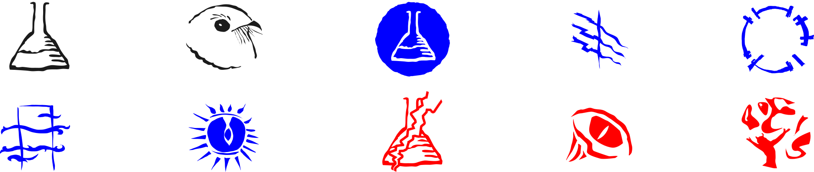
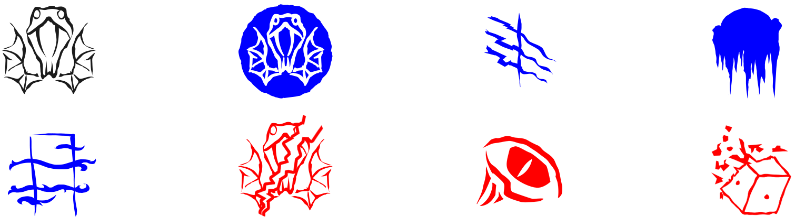
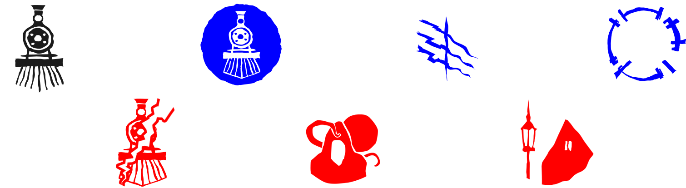
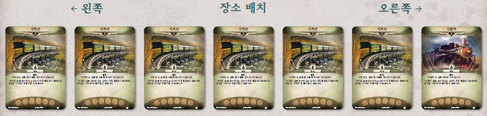
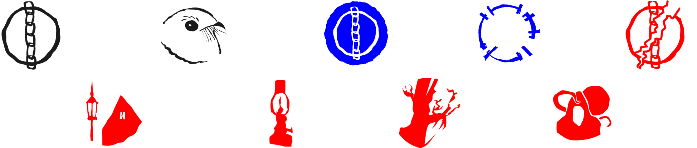
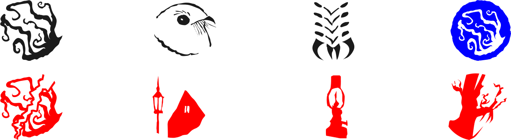
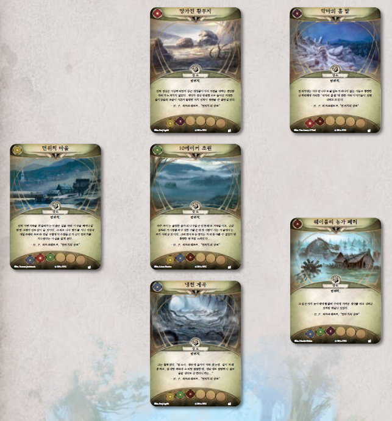
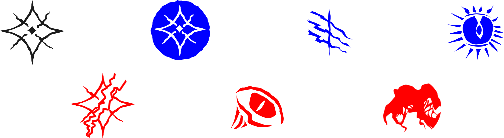

던위치의 유산
도전 모드
아컴호러 카드게임 캠페인 안내서
아래로 스크롤 ↓
*주의
본 규칙서를 포함하여 던위치의 유산(도전 모드)는 베타 버전(v.231012)입니다. 내부 플레이 테스트 및 유저 테스트 팀을 운영하여 테스트해왔으나, 아직 수정되지 않은 상호작용 요소가 존재할 수 있습니다. 몇몇 복잡한 상호작용과 관련된 규칙은 “자주 묻는 질문”에 수록해 두었으니 참고하시기 바랍니다.
당신의 목숨이 그들 손아귀에 있다. 아직 당신이 모를 뿐…
“나는 그의 저주받은 일기를 불태울 생각이오. 여러분이 현명하다면, 저기 있는 돌 제단을 다이너마이트로 날려 버리고 저쪽 언덕에 원형으로 정렬된 선돌을 죄다 뽑아 버리시오. 웨이틀리 일가가 애지중지한 괴물의 자취를 말끔히 없애려면 그 길뿐이오…”
H. P. 러브크래프트, “던위치의 공포”
던위치의 유산 도전 모드는 <아컴호러 카드게임>의 캠페인입니다. 1-4명이 즐기는 본 확장에는 “과외 활동(도전 모드)”, “도박장은 언제나 이긴다(도전 모드)”, “미스캐토닉 박물관(도전 모드)”, “에식스 카운티 특급열차(도전 모드)”, “제단에 흘린 피(도전 모드)”, “차원 너머의 보이지 않는 존재(도전 모드)”, “파멸이 기다리는 곳(도전 모드)”, “시공간을 헤매다(도전 모드)”의 여덟 가지 시나리오가 들어 있습니다. 이 시나리오들은 단독으로 즐길 수도 있고, 여덟 장으로 구성된 더 큰 캠페인을 즐길 수도 있습니다. 던위치의 유산 도전 모드는 돌아온 던위치의 유산과 함께 사용하도록 구성되어 있으며, 기존 캠페인에 비해서 다소 난이도가 높은 편입니다. 가급적 던위치의 유산/돌아온 던위치의 유산 캠페인을 다회차 경험한 후에 즐길 것을 권장합니다.
목차
확장 아이콘
던위치의 유산 도전 모드 캠페인에 속하는 카드는 다음 아이콘으로 구분할 수 있습니다. 이 아이콘은 카드 번호 앞에 그려져 있습니다.
추가 규칙과 규칙 명료화
경계
조사자가 경계 키워드가 있는 적으로부터 회피를 시도하는 도중 능력 테스트에 실패할 때마다, 우선 그 능력 테스트의 모든 결과를 적용합니다. 그 후, 그 적이 자신에게 회피를 시도했던 조사자를 상대로 공격을 수행합니다(경계 공격). 적은 경계 공격을 수행한 후에도 소진 상태가 되지 않습니다. 경계 공격은 회피하는 조사자와 해당 적이 교전하고 있는지 여부에 상관없이 발생합니다.
면역
면역은 던위치의 유산 도전 모드에 속한 몇몇 조우 카드가 가진 키워드 기능입니다. 면역 키워드를 가진 카드에 있는 효과는 취소할 수도 무시할 수도 백지화할 수도 없습니다. 또한, 이러한 카드를 (비플레이 영역이라 할지라도) 플레이어 카드 효과를 통해 버릴 수도 없습니다.
무리(기존 규칙을 인지하고 있더라도 다시 한번 읽으시기 바랍니다)
‘무리 X’ 키워드를 가진 적은 하나가 아니라 여러 개체가 무리지어 움직이는 적을 뜻합니다. 당신이 ‘무리 X’ 키워드를 가진 적을 플레이 영역에 둔 후, 대표 조사자의 보유 게임에서 사용하지 않는 플레이어 카드 또는 조우 카드를 X장 가져와 뒷면으로 그 적 밑에 놓습니다. 이렇게 밑에 놓은 카드를 “무리 카드”라고 부르며, 무리 카드의 맨 위에 놓인 적 카드를 “우두머리 적”(혹은 간단히 “우두머리”)이라고 부릅니다. 몇몇 시나리오 효과는 플레이어로 하여금 적 하나에게 “무리 카드”를 추가하라고 지시하기도 합니다. 이 경우에도 위와 동일한 방법을 적용합니다.
- 원한다면 플레이어/조우 카드가 아닌 대체물(동전 등)을 사용하여 무리 카드를 표시해도 좋습니다.
- 우두머리 적 밑에 있는 모든 무리 카드는 대부분의 경우 개별적으로 작용합니다. 모든 무리 카드는 우두머리 적과 동일한 수치값, 문구를 갖습니다. (예시: 무리 카드 2장이 깔린 우두머리와 교전하고 있는 조사자는 동시에 적 셋과 교전하고 있는 것입니다.)
- 적 단계 동안 적이 공격할 때, 모든 무리 카드는 개별적으로 공격을 합니다. 이 과정 동안 우두머리 적과 그에 딸린 무리 카드가 모두 한 번씩 공격을 하고 난 후, 이들을 한꺼번에 소진시킵니다.
- 모든 무리 카드는 피해를 받거나 공격을 당할 때에도 서로 별개로 간주합니다. 하지만 우두머리 적 밑에 무리 카드가 있다면 우두머리 적을 쓰러뜨릴 수 없습니다. 무리 카드 하나가 쓰러질 때, 초과분의 피해를 해당 무리에 있는 다른 무리 카드나 우두머리 적에게 할당해도 됩니다.(예시: ‘류드밀라 로마노바’가 ‘45구경 톰슨 기관단총’을 사용해서 무리 카드가 2개인 ‘변화무쌍한 구체의 집괴’를 공격합니다. 이번 공격은 피해를 2 줍니다. 그중 피해 1로 무리 카드 2장 중 1장을 쓰러뜨리고, 나머지 피해 1을 다른 무리 카드 1장에 할당하여 그것도 쓰러뜨립니다.)
- 언제든 무리 카드가 플레이 영역에서 나갈 때, 그 카드를 소유자의 보유 게임으로 반납합니다. 대체물을 사용한 경우, 이를 제거합니다.
- 우두머리 적과 그에 딸린 무리 카드는 하나의 독립체처럼 이동하고 교전하며 소진됩니다.(우두머리 적 또는 그에 딸린 아무 무리 카드 하나를 회피한다면, 그 무리에 속한 모두가 소진 상태가 되고 교전이 풀립니다).
동행
동행은 던위치의 유산 도전 모드에 속한 이야기 자산 카드가 갖는 키워드 기능입니다. 이러한 동행 자산은 던위치의 유산 도전 모드의 시나리오를 진행하는 과정에서 획득하고 대동할 수 있는 유능한 조력자(또는 물건)이며, 여러분이 캠페인을 성공적으로 끝마칠 수 있도록 큰 도움을 줍니다.
- 본 캠페인에서는 시나리오를 시작할 때마다, 각 조사자가 동행 자산을 하나씩 선택하여 자신의 플레이 영역에 둘 수 있습니다(해당 동행 자산을 “대동”한다고 일컫습니다). 동행 자산은 조사자의 덱에 포함할 수 없습니다. 조사자는 이렇게 어느 동행을 대동할지 선택할 때마다, 이전에 대동했던 동행을 고정적으로 대동할 필요 없이 다른 동행을 대동해도 됩니다(원한다면 동행을 대동하지 않아도 됩니다). 조사자 수보다 동행 자산 개수가 적을 경우, 가용한 만큼만 대동할 수 있습니다.
- 동행 자산은 조종하는 조사자가 탈락한 경우 및 별도로 명시된 경우를 제외하고는 플레이 영역에서 나갈 수 없으며, 해당 조력자 카드가 백지화되더라도 ‘동행’ 키워드는 백지화될 수 없습니다.
- 다수의 동행 자산은 기존 던위치의 유산 캠페인에 포함된 카드와 동일한 명칭을 갖습니다. 조사자 준비 과정에서 동행 카드를 플레이 영역에 둘 때, 반드시 해당 카드에 ‘동행’ 키워드가 있는지 확인하세요.
최후통첩
최후통첩은 <아컴호러 카드게임>을 더욱더 즐겁게 플레이하기 위해 난이도를 조절하는 선택 규칙입니다. 그러나, 던위치의 유산 도전 모드 캠페인을 즐길 경우에는 다음과 같이 산산이 조각난 장막, 합산된 권능 선택 규칙을 반드시 적용해야 합니다.
- 최후통첩: 산산이 조각난 장막: (조우 카드의 효과로 인해) 조사자의 덱에서 약점 카드가 1장 이상 버려질 때마다, (해당 효과를 해결한 후에) 이렇게 버려진 약점 카드 모두를 다시 원래 조사자의 덱에 섞어넣습니다. 섞어넣을 수 없다면, 그 조사자의 덱 맨 밑에 둡니다.
- 최후통첩: 합산된 권능: (조우 카드의 효과/기능에 한하여) “~마다 A하거나 또는 B합니다” 꼴의 문구를 해결할 경우, 이를 하나의 합산된 효과로 누계하여 동시에 해결합니다(동시에 취소/무시/방어 가능). 단, “~마다, 다음 중 하나를 선택합니다”와 같이 명백히 “선택”할 것을 지시한 경우에는 각각의 선택지를 독립적인 효과로 해결합니다.
예시: 혼돈 주머니에 축복 토큰이 10개, 저주 토큰이 5개인 상황에서 ‘메리 수녀’가 약점인 ‘신념의 위기([인스머스에 드리운 음모], 7)’를 뽑았습니다. 축복 토큰 5개를 저주 토큰으로 맞바꾸고, 맞바꿀 수 없는 축복 토큰 5개에 한하여 각기 공포 1을 받기로 합니다. 이때, 공포 1을 5번 받는 것이 아니라 공포 5를 동시에 받는 것으로 해결합니다.
“당신의 버린 카드 더미를 섞습니다”
‘뒤틀린 과거의 환영’ 공용 조우에서와 같이, 이따금 “당신의 버린 카드 더미를 섞습니다”와 같은 지시를 받기도 합니다. 이러한 효과는 버린 카드 더미를 덱에 섞어넣으라는 뜻이 아니니 유의하세요. 버린 카드 더미를 무작위로 만들어(섞어) 후속 효과와 상호작용할 카드를 무작위로 정하기 위함입니다.
캠페인 준비
던위치의 유산 도전 모드 캠페인은 다음 순서대로 준비합니다.
- 조사자를 선택합니다.
- 모든 조사자는 각자 자신의 조사자 덱을 만듭니다.
- 난이도를 선택합니다.
- 캠페인 혼돈 주머니를 만듭니다.
◆ 쉬움 (던위치로 여행을 떠나고 싶습니다):
+1, +1, 0, 0, 0, –1, –1, –1, –2, –2, [해골], [해골], [추종자], [자동 실패], [고대 표식].
◆ 보통 (던위치의 유산에서 살아남고 싶습니다):
+1, 0, 0, –1, –1, –1, –2, –2, –3, –4, [해골], [해골], [추종자], [자동 실패], [고대 표식].
◆ 어려움 (모든 시간과 공간의 문을 열어젖히고 싶습니다):
0, 0, 0, –1, –1, –2, –2, –3, –3, –4, –5, [해골], [해골], [추종자], [자동 실패], [고대 표식].
◆ 전문가 (요그 소토스의 그릇이 됨으로써 진정한 모습을 되찾고 싶습니다):
0, –1, –1, –2, –2, –3, –3, –4, –4, –5, –6, –8, [해골], [해골], [추종자], [자동 실패], [고대 표식].
이제 당신은 서막을 시작할 준비가 되었습니다.
서막
책상에 앉은 헨리 아미티지 박사가 피노 와인 한 잔을 채워 들곤, 맞은편에 앉으라고 손짓합니다. “별다른 설명도 없이 부른 건 사과하네.” 아미티지 박사의 창백한 얼굴과 젖은 이마에 깊이 팬 주름에는 수심이 가득합니다.
얼마 전 미스캐토닉 대학의 도서관장이자 당신의 옛 스승이었던 아미티지 박사가 개인적인 도움을 구하고자 연락을 취해 왔습니다. 당신은 한치 망설임도 없이 기꺼이 응해, 아컴 남부에 있는 아미티지 박사의 집으로 향했습니다. 하지만 집안에 들어선 순간, 엉망이 된 아미티지 박사의 집을 보고 놀라지 않을 수 없었습니다. 책상 위에는 책과 공책이 어질러져 있었고, 화로 옆 바닥엔 빈 와인병이 뒹굴고 있었습니다. 당신이 알았던 아미티지 박사는 항상 정갈하고 정돈을 잘 하는 사람이었습니다.
잠시 상념에 잠겼던 노교수가 말을 꺼냅니다. “동료 둘을 찾고 있다네. 한 명은 고고학 교수인 프랜시스 모건 박사고 다른 한 명은 언어학 교수인 워렌 라이스 교수라네. 워렌은 오늘 일찍 나와 만나서 저녁 식사를 하며 우리가 발견한 몇 가지 중요한 것에 대해 논의하려고 했는데, 그렇게 약속을 한 뒤에 사라져버렸네. 처음엔 별일 아니라 생각했는데, 뭔가 벌어지고 있다는 느낌을 지울 수가 없네… 이것 참 한번쯤 겪은 듯한 느낌이란 말이지...” 당신은 아미티지 박사가 이토록 걱정으로 안절부절못하는 모습을 본 적이 없습니다. 책상 위 물잔으로 뻗는 그의 손은 계속 떨리고 있습니다. 물 한 모금을 초조하게 들이키는 동안에도 떨림은 멎지 않습니다. “워렌이 어디에 있는지는 프랜시스가 잘 알 것 같아서 그부터 찾아보았지만, 프랜시스 역시 연락이 닿질 않았어. 듣기론 노름판 같은 곳에서 많은 시간을 보낸다던데…”
“아무래도 워렌이 무슨 곤경에라도 처한 게 아닐까 싶어 걱정이 이만저만이 아니라네. 부디 자네가 워렌을 찾아주면 정말 고맙겠네. 혹여 프랜시스부터 만난다면, 그에게 도움을 요청할 수 있겠지.”
조사자들은 다음 중 하나를 선택해야 합니다:
- 마지막 목격담에 따르면, 워렌 라이스 교수는 미스캐토닉 대학의 인문관에서 밤 늦게까지 일하고 있었다고 한다. 그곳에 가서 워렌 라이스 교수를 찾아보자. 워렌 라이스 교수를 먼저 찾고자 한다면, 시나리오 I-A: “과외 활동”으로 이어집니다.
- 마지막 목격담에 따르면, 프랜시스 모건 박사는 상류층이 모이는 번화가의 무허가 술집 겸 도박장인 클로버 클럽에서 도박을 하고 있었다고 한다. 그곳에서 프랜시스 모건 박사와 이야기해 보자. 프랜시스 모건 박사를 먼저 찾고자 한다면, 시나리오 I-B: “도박장은 언제나 이긴다”로 이어집니다.
과외 활동
도입부: 아미티지 박사는 동료인 워렌 라이스 교수가 곤경에 처했을까봐 걱정했습니다. 그는 자신의 친구를 찾아 달라고 도움을 요청했습니다. 라이스 교수는 그저 몇 시간 정도 “어디 있는지 안 보이는” 정도에 불과한 듯한데, 아미티지의 염려는 이상하리만치 과해 보입니다…
조사자 준비로 이어집니다.
조사자 준비
- 조사자마다 각자 사용 가능한 동행 하나씩을 선택해도 됩니다(조사자 수보다 사용 가능한 동행 수가 적다면, 선택할 수 있는 데까지만 선택합니다). 각자 본인이 선택한 동행을 플레이 영역 중 자신의 플레이 영역에 둡니다. (이러한 동행 자산은 여러 조우 세트에 걸쳐서 포함되어 있습니다.) 이번 시나리오가 이번 캠페인의 첫 번째 시나리오라면, 사용 가능한 동행이 아직 없을 것입니다.
시나리오 준비
- 다음 조우 세트의 모든 카드를 모읍니다. 과외 활동, 쏙독새, 돌아온 과외 활동, 문턱 저 너머, 되살아난 악, 비밀 문, 요그 소토스의 특사, 과외 활동(도전 모드), 뒤틀린 마술, 아포고몬의 종복. 이 세트에는 다음 아이콘이 그려져 있습니다.

(파란색은 돌아온 던위치의 유산, 빨간색은 던위치의 유산 도전 모드에 속한 조우 세트입니다)
- 과외 활동 조우 세트에 포함된 시나리오 참조 카드를 게임에서 제거합니다. 과외 활동(도전 모드) 조우 세트에 포함된 시나리오 참조 카드를 사용합니다.
- 이번 시나리오에서는 다음 상황에 따라 어떤 ‘교수실’을 사용할지 정해집니다.
- “과외 활동”이 캠페인의 첫 번째 시나리오라면, ‘교수실(아직 이른 밤)’을 사용합니다. 이 카드를 비플레이 상태로 치워 둡니다. ‘교수실(시간이 늦었다)’을 게임에서 제거합니다.
- “도박장은 언제나 이긴다”를 완료했다면, ‘교수실(시간이 늦었다)’을 사용합니다. 이 카드를 비플레이 상태로 치워 둡니다. ‘교수실(아직 이른 밤)’을 게임에서 제거합니다.
- ‘연금술 혼합물’, ‘실험체’, ‘기숙사’, ‘연금술 실험실’을 비플레이 상태로 치워 둡니다.
- ‘죽음을 열망하다’ 음모 사본 2장과 과외 활동 조우 세트에 포함된 ‘워렌 라이스 교수’ 이야기 자산을 게임에서 제거합니다.
- 과외 활동(도전 모드) 조우 세트에 포함된 (‘동행’ 키워드를 가진 버전의) ‘워렌 라이스 교수’, ‘에이미 박’ 이야기 자산을 게임에서 제거합니다. (이러한 카드는 결말에서 사용합니다.)
- 과외 활동 조우 세트에 포함된 ‘재즈 멀리건’ 이야기 자산을 게임에서 제거합니다. 과외 활동(도전 모드) 조우 세트에 포함된 ‘재즈 멀리건(부상당한 관리실장)’ 이야기 자산과 ‘재즈 멀리건(적대적인 관리실장)’ 이야기 자산을 비플레이 상태로 치워 둡니다. 주요목적 1b/2a에서 언급하는 ‘재즈 멀리건’은 ‘재즈 멀리건(적대적인 관리실장)’을 뜻합니다.
- ‘재즈 멀리건(부상당한 관리실장)’ 이야기 자산을 비플레이 상태로 치워 둘 때, 2명 이하로 게임을 하고 있다면 a면, 3명 이상이 게임을 하고 있다면 b면이 보이도록 치워두는 것이 좋습니다.
- 다음과 같이 장소를 플레이 영역에 둡니다.
- ‘미스캐토닉 대학 안마당’, ‘인문관’, ‘학생회관’, ‘과학관’, ‘행정관’ 장소를 플레이 영역에 둡니다.
- ‘오른 도서관’과 ‘워렌 천문대’ 중에서 무작위로 하나를 선택합니다. 선택한 장소를 플레이 영역에 두고 다른 하나는 게임에서 제거합니다.
- 모든 조사자는 ‘미스캐토닉 대학 안마당’에서 시작합니다.
- ‘모여드는 안개’ 음모 카드를 ‘행정관’에 부착하고 그 위에 자원을 1 [조사자]개 놓습니다.
- 난이도를 확인합니다.
- 어려움 난이도로 게임을 즐긴다면, 주요사건 1a에 파멸을 1개 놓습니다.
- 전문가 난이도로 게임을 즐긴다면, 주요사건 1a에 파멸을 2개 놓습니다.
- 도박장은 언제나 이긴다(도전 모드)를 완료했다면…
- 혼돈 주머니에 [옛것] 토큰을 1개 추가합니다.
- 돌아온 과외 활동 조우 세트에 포함된 ‘종복이 된 경비원’ 사본을 1장 찾아서 ‘행정관’에 출현시킵니다.
- 남은 조우 카드를 함께 섞어, 조우 덱을 만듭니다.
- 이제 당신은 게임을 시작할 준비가 되었습니다.
추천 장소 배치

시나리오가 끝날 때까지 읽지 마시오
아무 결말에도 도달하지 못했다면(모든 조사자가 후퇴했거나 쓰러졌다면): 대학에서 도망쳐 나오는 중에 교정의 북쪽 끝에서 비명 소리가 들려옵니다. 구급차가 당신을 지나쳐 가고, 당신은 혹시나 최악의 상황이 벌어지진 않았을까 하는 걱정에 휩싸입니다. 몇 시간이 지나서야 ‘미친 개와도 같은 무언가’가 대학 기숙사로 향했다는 이야기를 전해 듣습니다. 괴물이 기숙사에 있던 학생들을 공격했고, 그로 인해 많은 사상자가 발생했다고 합니다.
- 캠페인 기록지에 워렌 라이스 교수가 납치되었다라고 기록합니다.
- 캠페인 기록지에 조사자들이 학생들을 구하지 못했다라고 기록합니다. 당신은 죄책감에 사로잡힙니다. 캠페인이 끝날 때까지 혼돈 주머니에 [석판] 토큰을 1개 추가합니다.
- 각 조사자는 승점 더미에 있는 카드의 승점값만큼 경험치를 얻습니다. 각 조사자는 그날 밤 사건을 곱씹어 봄에 따라, 경험치를 추가로 1씩 얻습니다.
- 이번 시나리오가 캠페인의 첫 번째 시나리오라면, 시나리오 I-B: “도박장은 언제나 이긴다”로 이어집니다. 그 외의 경우, 막간 I: “아미티지의 운명”으로 이어집니다.
결말 1: 재갈이 물린 채 사무실 옷장 안에 묶여 있던 워렌 라이스 교수를 찾았습니다. 재갈과 결박을 풀어주자, 그는 이상한 사람 몇 명이 수 시간 동안 그를 뒤쫓으며 교정을 돌아다녔다고 알려주었습니다. 라이스를 사무실에 몰아넣고 가둔 것도 그들이라고 합니다. 하지만 목적이 무엇이었는지는 라이스도 알지 못합니다. 아미티지 박사가 보내서 왔다는 당신의 말에 그는 한결 안심한 듯 보입니다. 하지만, 그는 모건 박사 역시 위험에 빠졌을 것이라고 알려줍니다. 낯선 자들의 목표가 라이스 교수임은 분명한 듯하여, 당신은 그를 최대한 빨리 교정에서 데리고 나가는 것을 최우선 목표로 삼습니다. 교정을 나서는 순간 교정의 북쪽 끝에서 비명 소리가 들려옵니다. 구급차가 당신을 지나쳐 가고, 당신은 혹시나 최악의 상황이 벌어지진 않았을까 하는 걱정에 휩싸입니다. 몇 시간이 지나서야 ‘미친 개와도 같은 무언가’가 대학 기숙사로 향했다는 이야기를 전해 듣습니다. 괴물이 기숙사에 있던 학생들을 공격했고, 그로 인해 많은 사상자가 발생했다고 합니다.
- 캠페인 기록지에 조사자들이 워렌 라이스 교수를 구출했다라고 기록합니다. 캠페인 기록지의 “동행” 항목에 ‘워렌 라이스 교수’를 기록합니다.
- 캠페인 기록지에 조사자들이 학생들을 구하지 못했다라고 기록합니다. 당신은 죄책감에 사로잡힙니다. 캠페인이 끝날 때까지 혼돈 주머니에 [석판] 토큰을 1개 추가합니다.
- 각 조사자는 승점 더미에 있는 카드의 승점값만큼 경험치를 얻습니다.
- 시나리오 I-B: “도박장은 언제나 이긴다”로 이어집니다.
결말 2: 당신은 기숙사의 화재경보기를 닥치는 대로 작동시킨 후, 학생들을 북쪽 출구로 인도하며 교정에서 빠져나가려 합니다. 혼란에 빠져 지친 수많은 학생들에게 이 사건의 진상을 설명하는 것은 득보다 실이 더 많을 것 같습니다. 몇 분이나 흘렀을까, 찢어지게 날카로운 비명 소리가 교정에 울려 퍼집니다. 당신은 학생들에게 기다리라고 말하곤, 그비명을 조사하기 위해 기숙사로 돌아갑니다. 이상하게도 그 어떤 괴물의 흔적도 찾을 수 없었지만, 안심보다는 걱정이 밀려옵니다. 서둘러 교수실에 가서 라이스 교수를 찾아보았으나, 그의 흔적은 어디에도 보이지 않습니다.
- 캠페인 기록지에 워렌 라이스 교수가 납치되었다라고 기록합니다.
- 캠페인 기록지에 학생들을 구해냈다라고 기록합니다.
- 이번 시나리오가 캠페인의 두 번째 시나리오라면, 캠페인 안내서의 “동행” 항목에 ‘에이미 박’을 기록하고 바로 다음 내용도 추가로 읽습니다.
- 교수실을 수색하던 도중 복도를 내달리는 다급한 발걸음 소리가 울려 퍼집니다. 곧이어 교수실 문이 쾅 하고 열리더니 얼굴 높이까지 될법한 높이의 책더미를 껴안은 여학생이 들어옵니다. “라이스 교수님, 오른 도서관에서 대여 인가가 났어요. 저번에 말씀하셨던…” 학생은 교수가 아니라 외부인이 있다는 것을 이제야 알아차리더니 휘둥그레진 눈으로 묻습니다. “혹시 어떻게 오셨나요? 오늘 저희 교수님과 약속을 잡으셨나요?” 라이스 교수가 납치되었을 가능성이 높다고 밝히자, 책이 바닥으로 후드득 떨어집니다. 학생은 한참을 울먹이더니 이렇게 말합니다. “며칠 전, 교수님께서 뉴잉글랜드 사교 종파에 대한 민담 채록을 모아 달라고 하셨어요. 뭔가 심상치 않은 사교의 움직임이 벌어지고 있다면서요. 그게 교수님 당신께 생길 일이라고는 생각지 못했던 거죠. 아무래도 저도 따라가야겠어요. 교수님에게는 제가 필요해요. 제게도 교수님이 필요하고요.”
- 각 조사자는 승점 더미에 있는 카드의 승점값만큼 경험치를 얻습니다.
- 이번 시나리오가 캠페인의 첫 번째 시나리오라면, 시나리오 I-B: “도박장은 언제나 이긴다”로 진행합니다. 그 외의 경우, 막간 I: “아미티지의 운명”으로 이어집니다.
결말 3: 당신은 연금술 학부에서 뛰쳐나온 기이하고 끔찍한 괴물을 쓰러뜨리고 라이스 교수를 찾아 교수실로 달려갑니다. 하지만 교수실에 도착했을 땐, 라이스 교수의 흔적은 어디에도 보이지 않았습니다.
- 캠페인 기록지에 워렌 라이스 교수가 납치되었다라고 기록합니다.
- 캠페인 기록지에 실험체를 쓰러뜨렸다라고 기록합니다.
- 각 조사자는 승점 더미에 있는 카드의 승점값만큼 경험치를 얻습니다.
- 이번 시나리오가 캠페인의 첫 번째 시나리오라면, 시나리오 I-B: “도박장은 언제나 이긴다”로 진행합니다. 그 외의 경우, 막간 I: “아미티지의 운명”으로 이어집니다.
결말 4: 몇 시간 후 정신을 차렸을 때엔, 당신은 탈진하고 다친 상태였습니다. 당신이 무엇을 보았는지는 확실치 않지만, 그 괴물의 모습을 본 당신의 마음은 공포에 잠식당합니다. 당신은 다른 생존자로부터 ‘미친 개와도 같은 무언가’가 대학 기숙사로 향했다는 이야기를 전해 듣습니다. 괴물이 기숙사에 있던 학생들을 공격했고, 그로 인해 많은 사상자가 발생했다고 합니다.
- 캠페인 기록지에 조사자들이 몇 시간 동안 의식을 잃었다라고 기록합니다.
- 캠페인 기록지에 워렌 라이스 교수가 납치되었다라고 기록합니다.
- 각 조사자는 승점 더미에 있는 카드의 승점값만큼 경험치를 얻습니다. 각 조사자는 그날 밤 사건을 곱씹어 봄에 따라, 경험치를 추가로 1씩 얻습니다.
- 캠페인 기록지에 조사자들이 학생들을 구하지 못했다라고 기록합니다. 당신은 죄책감에 사로잡힙니다. 캠페인이 끝날 때까지 혼돈 주머니에 [석판] 토큰을 1개 추가합니다.
- 이번 시나리오가 캠페인의 첫 번째 시나리오라면, 시나리오 I-B: “도박장은 언제나 이긴다”로 진행합니다. 그 외의 경우, 막간 I: “아미티지의 운명”으로 이어집니다.
도박장은 언제나 이긴다
도입부: 아미티지 박사는 동료인 프랜시스 모건 박사를 찾아볼 것을 제안했습니다. 아미티지 박사는 모건 박사가 곤경에 처했는지 여부는 알지 못했지만, 동료 교수가 이런 상황에서 도박꾼과 어울려 노는 것만큼은 탐탁지 않아 했습니다. 모건 박사는 번화가 어딘가에 있는 악명 높은 도박장인 클로버 클럽에 있습니다. 클럽의 위치를 찾기 쉽지 않은 탓에, 식당으로 위장한 클럽 입구를 알아내기 위해 뇌물을 써야 했습니다. 마침내 알아낸 곳은 라 벨라 루나라는 식당으로, 극장 옆에 있는 고급 이탈리아 음식점이었습니다. 당신은 최대한 잘 차려 입고 그곳으로 향합니다.
라 벨라 루나 앞에 도착하자, 가는 세로줄무늬 정장을 입은 남자가 다가오는 당신을 눈으로 훑어봅니다. “좋은 시간 되십시오.” 남자가 식당 앞문을 열어주면서 음흉해 보이는 미소를 흘립니다.
조사자 준비로 이어집니다.
조사자 준비
- 조사자마다 각자 사용 가능한 동행 하나씩을 선택해도 됩니다(조사자 수보다 사용 가능한 동행 수가 적다면, 선택할 수 있는 데까지만 선택합니다). 각자 본인이 선택한 동행을 플레이 영역 중 자신의 플레이 영역에 둡니다. (이러한 동행 자산은 여러 조우 세트에 걸쳐서 포함되어 있습니다.) 이번 시나리오가 이번 캠페인의 첫 번째 시나리오라면, 사용 가능한 동행이 아직 없을 것입니다.
시나리오 준비
- 다음 조우 세트의 모든 카드를 모읍니다. 도박장은 언제나 이긴다, 나오미 일당, 돌아온 도박장은 언제나 이긴다, 도박장은 언제나 이긴다(도전 모드), 끔찍한 운. 이 세트에는 다음 아이콘이 그려져 있습니다.
- 공포의 흉물, 던위치의 공포 조우 세트를 비플레이 상태로 치워 둡니다. 이 세트에는 다음 아이콘이 그려져 있습니다. 시나리오 도중 치워 두었던 끔찍한 흉물, 엄습하는 공포 조우 세트를 언급할 때, 그 대신 공포의 흉물, 던위치의 공포 조우 세트를 사용합니다.
(파란색은 돌아온 던위치의 유산, 빨간색은 던위치의 유산 도전 모드에 속한 조우 세트입니다)
- 도박장은 언제나 이긴다 조우 세트에 포함된 시나리오 참조 카드를 게임에서 제거합니다. 도박장은 언제나 이긴다(도전 모드) 조우 세트에 포함된 시나리오 참조 카드를 사용합니다.
- 다음과 같이 장소를 플레이 영역에 둡니다.
- ‘클로버 클럽 무대’를 비플레이 상태로 치워 둡니다.
- ‘클로버 클럽 라운지’ 장소 2장 중에서 무작위로 하나를 선택합니다. 선택한 장소를 플레이 영역에 두고 다른 하나는 게임에서 제거합니다.
- ‘클로버 클럽 바’, ‘클로버 클럽 카드게임방’, ‘라 벨라 루나’ 장소를 플레이 영역에 둡니다. 모든 조사자는 ‘라 벨라 루나’에서 시작합니다.
- 도박장은 언제나 이긴다 조우 세트에 포함된 ‘프랜시스 모건 박사’, ‘피터 클로버’ 이야기 자산과 ‘어두운 복도’, ‘복도 뒤편 출입구’(모든 사본), ‘클로버 클럽 무대’ 장소를 비플레이 상태로 치워 둡니다.
- 도박장은 언제나 이긴다(도전 모드) 조우 세트에 포함된 (‘동행’ 키워드를 가진 버전의) ‘프랜시스 모건 박사’, ‘나오미 오베니언’ 이야기 자산을 게임에서 제거합니다. (이러한 카드는 결말에서 사용합니다.)
- 과외 활동(도전 모드)을 완료했다면, 혼돈 주머니에 [석판] 토큰을 1개 추가합니다.
- 난이도를 확인합니다.
- 쉬움/보통 난이도로 게임을 즐긴다면, ‘클로버 클럽 책임자’ 적을 플레이 영역 중 ‘클로버 클럽 라운지’에 두고 ‘감시의 눈길’ 이야기 카드를 ‘클로버 클럽 라운지’ 장소에 부착합니다.
- 어려움/전문가 난이도로 게임을 즐긴다면, ‘클로버 클럽 책임자’ 적을 플레이 영역 중 ‘라 벨라 루나’에 두고 ‘감시의 눈길’ 이야기 카드를 ‘클로버 클럽 카드게임방’ 장소에 부착합니다.
- ‘도박장은 언제나 이긴다(도전 모드)’ 참조 카드를 주요목적 덱 근처에 둡니다. 이 카드는 다음과 같은 규칙을 추가로 제공합니다:
- ‘뒷골목’은 승점 1점을 잃습니다.
- 이번 시나리오 동안, 조우 카드에 있는 기능으로 혼돈 주머니에서 혼돈 토큰을 공개할 때, [축복]이나 [저주] 토큰이 공개되면 그 토큰을 무시하고 새로운 토큰을 공개합니다. (공개한 [축복]/[저주] 토큰은 혼돈 주머니로 다시 되돌려 놓습니다.)
- 남은 조우 카드를 함께 섞어, 조우 덱을 만듭니다.
주의: 이번 시나리오를 시작할 때, 주요사건 1a는 모든 범죄자 적에게 ‘냉담한’ 키워드를 부여합니다. ‘냉담한’ 적은 당신과 자동으로 교전하지 않습니다. 특정 지점에서, 이런 적들이 ‘냉담한’ 키워드를 잃을 수 있습니다. ‘냉담한’ 키워드를 잃은 적은 일반적인 규칙에 따라 같은 장소에 있는 조사자와 자동으로 교전한다는 점을 꼭 기억해야 합니다.
시나리오가 끝날 때까지 읽지 마시오
아무 결말에도 도달하지 못했다면 (각 조사자가 쓰러졌거나, 주요목적 3 이전에 후퇴했다면): 당신은 간신히 목숨을 건져 클럽에서 빠져나왔습니다. 결말 1을 읽습니다.
결말 1: 당신은 한 블록을 내달린 다음에야 멈춰 서서 몸을 추스릅니다. 숨을 가다듬기도 전에, 벼락이 떨어진 양 땅이 진동합니다. 집이나 가게에 있던 사람들이 무슨 소란인지 보려고 거리에 몰려듭니다. 사람들 틈에 섞여 클럽 건물로 다가간 당신은, 바로 몇 분 전까지만 해도 멀쩡히 있던 건물이 잔해만 남은 모습을 보고 공포에 질립니다. 모건 박사의 흔적은 어디에도 보이지 않습니다.
- 캠페인 기록지에 오베니언 갱이 조사자들에게 앙심을 품었다라고 기록합니다.
- 캠페인 기록지에 프랜시스 모건 박사가 납치되었다라고 기록합니다.
- 한 플레이어라도 “속임수를 썼다”면, 캠페인이 끝날 때까지 혼돈 주머니에 [옛것]토큰을 1개 추가합니다.
- 각 조사자는 승점 더미에 있는 카드의 승점값만큼 경험치를 얻습니다. 각 조사자는 그날 밤 사건을 곱씹어 봄에 따라, 경험치를 추가로 1씩 얻습니다.
- 이번 시나리오가 캠페인의 첫 번째 시나리오라면, 시나리오 I-A: “과외 활동”으로 진행합니다. 그렇지 않다면, 막간 I: “아미티지의 운명”으로 이어집니다.
결말 2: “세상에 이게 무슨…?” 프랜시스 모건 박사는 당신의 호위 아래 안전하게 밖으로 나오고 나서야 정신을 차립니다. 뭔가 기억나는 게 없는지 물어보니, 모건 박사는 고개를 흔들면서 말을 더듬습니다. “으… 어지러워.” 그가 눈에 띄게 지친 모습으로 말합니다. “아주 죽는 줄 알았군! 술을 너무 많이 마셨던 것 같네. 그런데 그 괴물은 대체… 그런 건 그때 이후론 본 적이 없는데…” 모건 박사의 말소리가 줄어듭니다. 아무래도 생각에 빠진 것 같습니다. 이윽고 무언가 알아차린 듯 모건 박사의 눈동자가 커지면서 안색이 창백해집니다. “지금 내 상태가 썩 좋진 않지만, 그쪽 일은 돕겠네. 할 수 있는 건 뭐든 다 하지.”
- 캠페인 기록지에 오베니언 갱이 조사자들에게 앙심을 품었다라고 기록합니다.
- 캠페인 기록지에 조사자들이 프랜시스 모건 박사를 구출했다라고 기록합니다. 캠페인 안내서의 “동행” 항목에 ‘프랜시스 모건 박사’를 기록합니다.
- 한 플레이어라도 “속임수를 썼다”면, 캠페인이 끝날 때까지 혼돈 주머니에 [옛것]토큰을 1개 추가합니다.
- 각 조사자는 승점 더미에 있는 카드의 승점값만큼 경험치를 얻습니다.
- 시나리오 I-A: “과외 활동”으로 이어집니다.
결말 3: 클럽에서 모건 박사를 찾지는 못했지만, 그 대신 당신이 구해준 남자가 감사의 뜻을 표합니다. 그의 이름은 피터 클로버로, 방금 빠져나온 클럽의 소유주라고 자신을 소개합니다. 이런 상황 속에서도 그는 차분함을 잃지 않았습니다. 거리로 빠져나오는 순간, 광택이 나는 크라이슬러 B-70이 당신 앞에 섭니다. 그리고 긴 갈색 머리의 매력적인 여성이 눈을 가늘게 뜨고 차에서 내립니다. 그녀의 양옆에는 제법 위험해 보이는 사내들이 재킷 속에 손을 집어넣은 채 당신을 바라보고 있습니다. “피터.” 그녀가 안도의 한숨을 내쉽니다. “다행이야, 무사해서. 문제가 생겼다던데?” 그녀가 매서운 눈빛으로 당신을 노려보며 피터에게 묻습니다. “누구야, 이 사람들?”
피터가 느긋하게 조끼를 털며 말합니다. “나오미, 내 사랑. 이들은 내 친구요. 이들은… 흠흠.” 피터가 목을 가다듬습니다. “이들이 클럽에서 날 보호해 주었다오.” 그가 잠시 말을 멈췄다가 이어갑니다. “우리가 고마워해야 할 사람들이오.” 팔을 꼰 나오미가 당신을 눈으로 훑고는 거만한 미소를 흘립니다.
“좋아. 피터를 구해줘서 고맙다고 해야겠군. 뒷정리는 우리가 할 테니 그만 가 봐.” 그녀가 옆에 있는 갱단원을 향해 고개를 끄덕이자 그들은 코트 안쪽에서 총을 꺼내 들고서는 당신을 지나쳐 클럽을 향해 걸어갑니다. 그때 클럽 뒷문에서 거대한 구체의 집괴가 비집고 나와 오베니언 갱단을 향해 달려듭니다.
뼈가 짓뭉개지는 섬뜩한 소리와 함께 비명이 터져나오고 오베니언 갱단의 총구에서 지축이 울릴만큼 요란한 굉음이 터집니다. 그러나 놈은 멈추지 않고 총탄과 갱단원을 하나 둘씩 집어삼키더니 피터를 향해 돌진하기 시작합니다. 당신은 한치 주저함도 없이 놈을 향해 달려들어 가장 커다란 구체의 중심부를 베어냅니다.
그러자 구체들을 둘러싸고 있는 비정형의 점액질이 부글부글 끓으며 녹아내리기 시작했고, 몇 분 후 그 자리에는 늙수그레한 남성의 시신만이 남았습니다. 바닥에 주저앉은 채 아연실색한 얼굴로 바라보고 있던 나오미가 다시 냉엄한 표정을 짓더니, 반라인 시신을 향해 다가가 그의 몸에 진홍색으로 새겨진 마법진을 들여다봅니다.
잠시 후 나오미가 돌아서서 당신을 부릅니다. “거기 너. 이게 뭔지 알고 있지? 내 사업장도 모자라 피터까지 위협한 것들을 가만히 둘 수는 없어. 앞장서! 내 손으로 끝을 봐야겠으니까.” 나오미에게 “끝을 본다”라는 말이 어디까지를 뜻하는 것인지는 모르겠지만, 어쨌든 당신은 나오미와 함께 이곳을 떠납니다.
- 캠페인 기록지에 나오미가 조사자들의 뒤를 맡았다라고 기록합니다. 캠페인 안내서의 “동행” 항목에 ‘나오미 오베니언’을 기록합니다.
- 캠페인 기록지에 프랜시스 모건 박사가 납치되었다라고 기록합니다.
- 한 플레이어라도 “속임수를 썼다”면, 캠페인이 끝날 때까지 혼돈 주머니에 [옛것]토큰을 1개 추가합니다.
- 각 조사자는 승점 더미에 있는 카드의 승점값만큼 경험치를 얻습니다.
- 막간 I: “아미티지의 운명”으로 이어집니다.
결말 4: 소방수가 잔해 속에 파묻혀 있는 당신을 발견합니다. “여기 생존자야!” 몇몇 소방수가 응급조치를 해주고는, 이어서 경찰이 다가와 무슨 일이 있었는지 물어봅니다. 하지만, 끔찍한 괴물이 저 건물을 파괴했다고 말한들 그들이 믿을 리 없습니다. 뭐라 해야 할지 몰라, 기억이 나지 않는다는 애매한 말로 얼버무립니다. “세인트 메리 병원으로 호송하겠습니다.” 한 간호사가 구급차를 손으로 가리키며 말합니다. 이 무시무시한 일들이 벌이지고 있는 와중에, 병원에 누워 있을 수만은 없습니다. 당신은 간호사가 한눈을 판 사이 현장을 빠져나옵니다.
- 캠페인 기록지에 오베니언 갱이 조사자들에게 앙심을 품었다라고 기록합니다.
- 캠페인 기록지에 조사자들이 프랜시스 모건 박사를 구출했다라고 기록합니다. 캠페인 안내서의 “동행” 항목에 ‘프랜시스 모건 박사’를 기록합니다.
- 한 플레이어라도 “속임수를 썼다”면, 캠페인이 끝날 때까지 혼돈 주머니에 [옛것]토큰을 1개 추가합니다.
- 각 조사자는 육체적 트라우마를 1씩 겪습니다.
- 캠페인 기록지에 조사자들이 몇 시간 동안 의식을 잃었다라고 기록합니다.
- 각 조사자는 승점 더미에 있는 카드의 승점값만큼 경험치를 얻습니다. 각 조사자는 그날 밤 사건을 곱씹어 봄에 따라, 경험치를 추가로 1씩 얻습니다.
- 이번 시나리오가 캠페인의 첫 번째 시나리오라면, 시나리오 I-A: “과외 활동”으로 진행합니다. 그렇지 않다면, 막간 I: “아미티지의 운명”으로 이어집니다.
아미티지의 운명
- 캠페인 기록지를 확인합니다.
- 조사자들이 몇 시간 동안 의식을 잃었다면, 아미티지의 운명 1로 이어집니다.
- 그 외의 경우, 아미티지의 운명 2로 건너뜁니다.
아미티지의 운명 1: 미스캐토닉 대학과 클로버 클럽에서 겪은 일로 인해 당신은 잔뜩 겁에 질립니다. 누가, 혹은 대체 무엇이 라이스 교수와 모건 박사를 쫓고 있는지는 분명치 않습니다. 혹여 아미티지 박사까지 노리는 자가 있는 것이 아닐까 걱정된 당신은 급히 아미티지 박사의 집으로 돌아갔습니다. 아니나 다를까 도착해보니, 앞문 걸쇠는 부서져 열려 있고 거실과 서재는 누군가 마구 뒤진 듯 난장판이었습니다. 아미티지 박사의 모습은 보이지 않습니다. 집을 수색하던 중, 아미티지 박사의 책상 제일 아래 서랍에서 일지 한 권을 발견했습니다. 다른 서류 더미에 가려있었던 탓에 침입자가 훔쳐가지 않은 듯합니다. 일지는 살면서 한 번도 본 적 없는 기이한 문자로 쓰여 있었습니다. 다행히도, 아미티지 박사는 일지에 해석을 달아두었습니다. 이 일지는 “윌버 웨이틀리”의 물건이었습니다.
윌버 웨이틀리의 일지에는 아미티지가 달아 둔 많은 주석과 함께, 놀라운 이야기가 적혀 있었습니다. 간밤의 끔찍한 경험이 아니었더라면, 당신은 아마 일지의 내용을 믿지 못했을 겁니다…
- 캠페인 기록지에 헨리 아미티지 박사가 납치되었다라고 기록합니다.
- 윌버 웨이틀리의 일지를 읽고 숨겨진 신화의 세계에 대해 알게 되었습니다. 각 조사자는 경험치를 추가로 2씩 얻습니다.
- 시나리오 II: “미스캐토닉 박물관”으로 이어집니다.
아미티지의 운명 2: 아컴 남부에 있는 아미티지 박사의 집으로 되돌아왔습니다. 아미티지 박사는 걱정으로 땀에 젖은 채 창백한 낯빛을 하고 책상에 앉아 있었습니다. 동료를 찾아봐 줘서 고맙다고 말하면서도, 아미티지 박사는 그리 안심한 듯 보이지 않습니다. 긴 침묵 끝에, 그는 안경을 고쳐 쓰고는 당신에게 말합니다.
“미안하게 되었네. 내가 미처 털어놓지 못한 게 있었네.” 아미티지 박사가 당신에게, 간밤의 끔찍한 경험이 아니었더라면 도저히 믿지 못했을 이야기를 들려주기 시작합니다…
- 캠페인 기록지에 조사자들이 헨리 아미티지 박사를 구출했다라고 기록합니다. 캠페인 안내서의 “동행” 항목에 ‘헨리 아미티지 박사’를 기록합니다.
- 시나리오 II: “미스캐토닉 박물관”으로 이어집니다.
미스캐토닉 박물관
도입부 1: 몇 달 전, 아미티지 교수와 그의 동료들은 아컴에서 북서쪽으로 몇 시간 정도 달려야 도착하는 시골 마을 던위치에서 마을을 유린하던 난폭한 괴물을 막아냈습니다. 그 얘기를 듣고, 처음에 당신은 광폭한 곰 내지는 그보다 좀 더 사나운 야수 따위를 상상했습니다. 하지만 교수가 묘사하는 괴물은 그런 것과는 아예 차원이 달랐습니다.
모든 일은 윌버 웨이틀리라는 사람이 올라우스 워미우스가 번역한 네크로노미콘의 라틴어 판본을 찾아 오른 도서관을 방문한 것에서부터 시작되었습니다. 윌버는 이미 존 디 교수의 낡아빠진 영문 번역본을 가지고 있었지만, 그것으로는 자기 목적을 채울 수가 없었던 모양입니다. 아미티지는 그 이상한 남자가 불순한 의도를 갖고 네크로노미콘을 빌리려 한다고 우려하여 열람하지 못하게 막았습니다. 웨이틀리는 밤을 틈타 오른 도서관에 침입하여 책을 훔치려 했으나, 대학을 지키는 경비견의 공격을 받았습니다. 아미티지, 라이스, 모건 이렇게 세 교수는 나중에야 웨이틀리의 시신을 발견했습니다. 웨이틀리의 시신은 반쯤만 인간의 형체를 닮은 털북숭이였고, 질긴 가죽에 녹회색 촉수가 달려있었다고 합니다. 그런 이야기를 접하고 나니 당신은 웨이틀리가 진짜 인간이기나 했는지 싶습니다.
- 캠페인 기록지를 확인합니다.
- 헨리 아미티지 박사가 납치되었다면, 도입부 2로 이어집니다.
- 조사자들이 헨리 아미티지 박사를 구출했다면, 도입부 3으로 건너뜁니다.
도입부 2: 아미티지 교수의 일지에는, 웨이틀리가 모종의 끔찍한 목적을 이루고자 네크로노미콘을 손에 넣으려 했다고 기록되어 있습니다. 아미티지 교수는 웨이틀리 일가가 획책한 모략에 종지부를 찍고자 던위치로 향하여 형언치 못할 존재와 맞서 싸웠다고 합니다. 운이 좋게도 윌버가 네크로노미콘을 얻지 못했기에 반쪽 짜리로 완성된 계획에 맞설 수 있던 것입니다. 그날 후로, 아미티지 교수는 대학에 있던 네크로노미콘 올라우스 워미우스 번역본을 미스캐토닉 박물관 학예사인 해럴드 월스테드에게 맡겨 박물관의 제한 구역에 보관했다고 합니다.
당장 스승의 안위도 걱정되기는 하지만, 또 다시 웨이틀리 일가를 비롯한 던위치의 음험한 사교 종파가 아미티지 박사를 납치한 것이라면… 이들은 다시금 네크로노미콘을 손에 넣기 위해 움직일 가능성이 높습니다. 당신은 한치의 고민도 없이 미스캐토닉 박물관으로 발걸음을 돌립니다.
조사자 준비로 이어집니다.
도입부 3: “나와 동료 교수들은 웨이틀리의 진정한 목적을 밝혀내고, 직접 던위치로 향해 그 반쪽짜리 계획에 종지부를 찍었다네. 그리고는 그 끔찍한 사건을 되도록 빨리 잊으려 부던히도 노력했었다네.” 아미티지 교수가 한숨을 쉬며 말합니다. “하지만 일이 아직 완전히 매듭지어진 건 아닌가 보군. 자세한 건 나중에 이야기해 주겠지만, 일단 지금은 올라우스 워미우스가 번역한 라틴어판 네크로노미콘을 확보하는 게 최우선일세. 내 직감이 맞다면, 자네를 공격한 자들은 분명 던위치에서 온 사교 종파 일원일 테지. 분명 네크로노미콘을 찾아 갈 게야. 몇 달 전 벌어진 사태 이후로, 도서관에서는 그 책을 안전하게 보관하기가 어렵겠다 싶어서 친우이자 미스캐토닉 박물관의 현직 학예사인 해럴드 월스테드에게 가져갔다네. 당시엔 박물관의 제한 구역에 보관해 두는 게 더 안전할 거라 생각했지만, 지금 생각해보니 너무 순진한 발상이었네. 무슨 수를 써서라도 네크로노미콘부터 확보해야 하네! 그자들이 거기 나와 있는 의식을 거행하면 얼마나 끔찍한 일이 벌어질지...”
조사자 준비로 이어집니다.
조사자 준비
- 조사자마다 각자 사용 가능한 동행 하나씩을 선택해도 됩니다(조사자 수보다 사용 가능한 동행 수가 적다면, 선택할 수 있는 데까지만 선택합니다). 각자 본인이 선택한 동행을 플레이 영역 중 자신의 플레이 영역에 둡니다. (이러한 동행 자산은 여러 조우 세트에 걸쳐서 포함되어 있습니다.)
시나리오 준비
- 다음 조우 세트의 모든 카드를 모읍니다. 미스캐토닉 박물관, 돌아온 미스캐토닉 박물관, 문턱 저 너머, 기어오르는 한기, 비밀 문, 미스캐토닉 박물관(도전 모드), 뒤틀린 마술, 끔찍한 운. 이 세트에는 다음 아이콘이 그려져 있습니다.

(파란색은 돌아온 던위치의 유산, 빨간색은 던위치의 유산 도전 모드에 속한 조우 세트입니다)
- 미스캐토닉 박물관 조우 세트에 포함된 시나리오 참조 카드를 게임에서 제거합니다. 미스캐토닉 박물관(도전 모드) 조우 세트에 포함된 시나리오 참조 카드를 사용합니다.
- 무작위로 ‘관리실’ 장소 2장 중 1장과 ‘경비실’ 장소 2장 중 1장을 선택하여 플레이 영역에 둡니다. 선택하지 않은 ‘관리실’과 ‘경비실’은 게임에서 제거합니다. 그런 다음, ‘박물관 입구’, ‘박물관 로비’ 장소를 플레이 영역에 둡니다. 모든 조사자는 ‘박물관 입구’에서 시작합니다.
- ‘전시장’ 장소 8장 가운데 6장을 다음 지시에 따라 별도의 “전시장 덱”으로 구성하여 치워 둡니다.
- ‘전시장(제한 구역)’가 아닌, 무작위 ‘전시장’ 장소 2장을 게임에서 제거합니다(따라서 ‘전시장(제한 구역)’을 포함하여 ‘전시장’ 장소는 총 6장이 됩니다).
- ‘전시장(제한 구역)’ 장소와 다른 무작위 ‘전시장’ 장소 2장을 미공개 면이 보이게 섞어 “전시장 덱” 맨 밑 카드 3장을 구성합니다.
- 그런 다음, 나머지 ‘전시장’ 장소 3장을 그 위에 무작위 순서대로 올려놓습니다. 어느 ‘전시장’ 카드가 ‘전시장(제한 구역)’인지 알 수 없도록 “전시장 덱”에 속한 카드 6장은 모두 미공개 면이 보이도록 두어야 합니다.
- 미스캐토닉 박물관 조우 세트에 포함된 ‘네크로노미콘(올라우스 워미우스 번역본)’, ‘해럴드 월스테드’, ‘애덤 린치’ 이야기 자산을 비플레이 상태로 치워 둡니다.
- 미스캐토닉 박물관(도전 모드) 조우 세트에 포함된 (‘동행’ 키워드를 가진 버전의) ‘네크로노미콘(올라우스 워미우스 번역본)’, ‘해럴드 월스테드’, ‘애덤 린치’ 이야기 자산을 게임에서 제거합니다. (이러한 카드는 결말에서 사용합니다.)
- 난이도를 확인합니다.
- 쉬움/보통 난이도로 게임을 즐긴다면, ‘공포의 추적자’를 ‘공허’에 두고, ‘공포의 추적자’에게 ‘어둠의 피조물’을 부착합니다. 아래의 “공허”를 참조하세요.
- 어려움/전문가 난이도로 게임을 즐긴다면, ‘공포의 추적자’를 ‘관리실’에 두고, ‘공포의 추적자’에게 ‘어둠의 피조물’을 부착합니다(’어둠의 피조물'에 자원이 1개 놓이는 점을 확인하세요). 아래의 “공허”를 참조하세요.
- ‘돌아온 미스캐토닉 박물관’ 참조 카드를 b면으로 뒤집어, 시나리오 참조 카드에 부착합니다. 이 카드는 다음과 같은 규칙을 추가로 제공합니다:
- 조사자가 주요사건 1b와 주요사건 2b의 문구를 해결하는 동안, 주요사건 덱의 다음번 주요사건에 있는 강제 기능이 활성화된 것으로 간주합니다.
- ‘무한한 문간’ 사본 1장을 ‘박물관 로비’에 부착합니다.
- 캠페인의 두 번째 시나리오로 과외 활동(도전 모드)을 진행했다면, 혼돈 주머니에 [석판] 토큰을 1개 추가합니다.
- 캠페인의 두 번째 시나리오로 도박장은 언제나 이긴다(도전 모드)를 진행했다면, 혼돈 주머니에 [옛것] 토큰을 1개 추가합니다.
- 남은 조우 카드를 함께 섞어, 조우 덱을 만듭니다.
- 이제 당신은 게임을 시작할 준비가 되었습니다.
“공허”
이번 시나리오에 속한 일부 카드에는 “공허”라는 영역이 적혀 있습니다. 공허는 주요목적 덱과 주요사건 덱 옆에 있는 비플레이 영역을 뜻하며, ‘공포의 추격자’ 적이 각종 카드 효과에 의해 이 영역으로 드나들 수 있습니다. 공허 영역에 있는 ‘공포의 추격자’는 비플레이 상태로 간주하며, 플레이어 카드나 조사자 행동의 영향을 받지 않습니다.
시나리오가 끝날 때까지 읽지 마시오
아무 결말에도 도달하지 못했다면(모든 조사자가 후퇴하거나 쓰러졌다면): 박물관에 있는 괴물의 정체가 무엇이든 간에, 당신에게는 그 괴물을 물리칠 의지도 수단도 없습니다. 네크로노미콘을 되찾을 수 있을지도 모른다는 당신의 기대는 완전히 무너졌습니다. 그렇지만, 아직도 간절하게 당신의 도움을 필요로 하는 이들이 있습니다. 당신은 용기를 짜내어 앞일을 대비합니다.
- 캠페인 기록지에 조사자들이 네크로노미콘을 회수하지 못했다라고 기록합니다.
- 각 조사자는 승점 더미에 있는 카드의 승점값만큼 경험치를 얻습니다.
- 시나리오 III: “에식스 카운티 특급열차”로 이어집니다.
결말 1: 이 네크로노미콘 번역본이 존재하는 한, 다른 마법사나 윌버 웨이틀리 같은 사악한 작자들이 계속 꼬여들 것입니다. 지금껏 목도한 위협으로부터 인류를 지켜내려면 이 책을 파괴해야 합니다. 당신은 쓰레기통을 찾아 잡다한 책과 서류로 가득 채운 다음 그 위에 네크로노미콘을 던지고는,성냥을 켜서 쓰레기통에 불을 붙입니다. 불길이 방 안을 열기로 가득 채우자, 오싹한 그림자도 불빛에서 점차 물러납니다. 불 붙은 책이 재로 변하는 광경을 가만히 바라보며 한 가지 바람만은 되새깁니다. 부디 이것이 올바른 선택이었기를...
- 캠페인 기록지에 조사자들이 네크로노미콘을 파괴했다라고 기록합니다.
- 플레이 영역에 ‘해럴드 월스테드’가 있는 조사자가 있다면, 캠페인 안내서의 “동행” 항목에 ‘해럴드 월스테드’를 기록합니다.
- 플레이 영역에 ‘애덤 린치’가 있는 조사자가 있다면, 캠페인 안내서의 “동행” 항목에 ‘애덤 린치’를 기록합니다.
- 각 조사자는 승점 더미에 있는 카드의 승점값만큼 경험치를 얻습니다.
- 시나리오 III: “에식스 카운티 특급열차”로 이어집니다.
결말 2: 네크로노미콘은 단순한 책이 아니라 당신의 뜻대로 부릴 수 있는 도구입니다. 이 책에는 당신이 지금껏 맞닥뜨린 힘과 괴물에 대한 정보가 잔뜩 담겨 있습니다. 앞으로 어떤 일이 닥칠지도 모르는데, 훗날 큰 도움이 될 이 책을 파괴하는 게 가당키나 하겠습니까? 게다가 네크로노미콘을 당신의 수중에 두는 것은, 이 책을 사악한 목적에 사용하려는 자들을 저지하는 것과 다를 바 없습니다.
- 캠페인 기록지에 조사자들이 네크로노미콘을 보관했다라고 기록합니다. 캠페인 안내서의 “동행” 항목에 ‘네크로노미콘(올라우스 워미우스 번역본)’을 기록합니다.
- 플레이 영역에 ‘해럴드 월스테드’가 있는 조사자가 있다면, 캠페인 안내서의 “동행” 항목에 ‘해럴드 월스테드’를 기록합니다.
- 플레이 영역에 ‘애덤 린치’가 있는 조사자가 있다면, 캠페인 안내서의 “동행” 항목에 ‘애덤 린치’를 기록합니다.
- 당신은 힘의 유혹에 빠져들었습니다. 캠페인이 끝날 때까지 혼돈 주머니에 [옛것] 토큰을 1개 추가합니다.
- 각 조사자는 승점 더미에 있는 카드의 승점값만큼 경험치를 얻습니다.
- 시나리오 III: “에식스 카운티 특급열차”로 이어집니다.
에식스 카운티 특급열차
도입부: 박물관에서의 일을 겪고 난 당신은 던위치에 얽힌 아미티지 교수의 이야기를 재고하게 되었습니다. 일련의 사건이 단지 우연일 리가 없습니다. 윌버 웨이틀리, 네크로노미콘, 던위치의 괴물, 그리고 이곳 아컴에서 사람들을 습격한 괴물과 인간. 이 모든 것이 연결되어 있는 것이 확실해졌습니다. 이제 어디로 향해야 할지가 분명해졌습니다. 궁벽한 시골 마을, 던위치로 가야 합니다.
처음엔 지금껏 조사한 바를 매사추세츠 주 경찰에게 알릴까 생각도 해 보았으나, 그리 좋은 결과를 얻진 못할 거라고 잠정적인 결론을 내렸습니다. 경찰은 당신의 이야기를 말도 안 되는 농담 짓거리 정도로 받아들일 게 뻔합니다. 사실 더 최악의 상황을 가정하자면, 당신이 그 자리에서 체포될지도 모를 일입니다. 어쨌든 지금까지 불법 주점에 들어갔고, 박물관에 침입했다는 것은 사실이니 말입니다. 당신은 더 깊이 파고들기 위해 직접 던위치로 향합니다.
필요하다 싶은 것들을 죄다 짐가방에 쑤셔 넣고 하룻밤의 짧은 휴식을 취합니다. 날이 밝은 후, 당신은 아컴 북부의 기차역으로 가서 출발 시각이 임박한 특급열차표를 아슬아슬하게 구매했습니다. 던위치는 미스캐토닉 강 유역을 따라 북서쪽으로 몇 시간여 기차로 달려야 도착할 거리에 있습니다. 그러나 정작 작은 마을에 불과한 던위치에는 기차역이 없기에, 그곳에 있는 아미티지 교수의 지인 중 한 사람에게 전화해 두었습니다. 그의 이름은 지블런 웨이틀리로 몇 달 전의 사태에서 살아남은 이입니다.
아미티지 교수의 기록에 따르면 웨이틀리 가의 혈통은 여러 갈래로 뻗어 있는데, 타락하고 파렴치한 자들이 있는 반면 그들과는 달리 타락하지 않고 사악한 의식에도 영향을 받지 않은 이들도 있다고 합니다. 지블런의 가계는 웨이틀리 가의 부패한 혈통과 부패하지 않은 혈통 사이에 있으며, 선조의 전통을 알고 있긴 하지만 그로 인해 타락하지는 않았다고 합니다. 당신은 던위치에서 가장 가까운 역에서 지블런과 만나 마을까지 픽업을 부탁하기로 했습니다.
열차가 아컴을 출발하기 무섭게, 전날 밤 휘말렸던 사건의 피로가 물 밀듯이 밀려와 몸이 축 늘어집니다. 몽롱한 정신을 깨우기 위해 휴게칸으로 향해 커피나 한 잔 하려던 찰나,, 달리던 열차가 갑자기 요란한 소리를 내며 흔들리는 바람에 당신은 깜짝 놀라 몽상에서 깨어납니다. 열차가 미끄러지면서 거칠게 멈추어 섰고, 등뒤에서 요란한 소리가 들려옵니다...
조사자 준비로 이어집니다.
조사자 준비
- 조사자마다 각자 사용 가능한 동행 하나씩을 선택해도 됩니다(조사자 수보다 사용 가능한 동행 수가 적다면, 선택할 수 있는 데까지만 선택합니다). 각자 본인이 선택한 동행을 플레이 영역 중 자신의 플레이 영역에 둡니다. (이러한 동행 자산은 여러 조우 세트에 걸쳐서 포함되어 있습니다.)
시나리오 준비
- 다음 조우 세트의 모든 카드를 모읍니다. 에식스 카운티 특급열차, 돌아온 에식스 카운티 특급열차, 문턱 저 너머, 되살아난 악, 에식스 카운티 특급열차(도전 모드), 수많은 입의 사교, 던위치의 공포. 이 세트에는 다음 아이콘이 그려져 있습니다.

(파란색은 돌아온 던위치의 유산, 빨간색은 던위치의 유산 도전 모드에 속한 조우 세트입니다)
- 에식스 카운티 특급열차 조우 세트에 포함된 시나리오 참조 카드를 게임에서 제거합니다. 에식스 카운티 특급열차(도전 모드) 조우 세트에 포함된 시나리오 참조 카드를 사용합니다.
- 무작위로 ‘기관차’ 장소 4장 중 1장을 선택하여 플레이 영역에 둡니다. 선택하지 않은 ‘기관차’는 모두 게임에서 제거합니다.
- 공개 면의 명칭이 ‘침대칸’, ‘식당칸’, ‘화물칸’인 ‘기차칸’ 장소 3장을 게임에서 제거합니다. 무작위로 나머지 ‘기차칸’ 장소 7장 중 5장을 선택하여 플레이 영역에 두되, ‘기관차’의 왼쪽에 일렬로 놓습니다.
- 플레이 영역 중 맨 왼쪽 ‘기차칸’ 장소의 왼쪽에 ‘휴게칸’ 장소를 두고 모든 조사자는 그 장소에서 시작합니다.
- 난이도를 확인합니다.
- 어려움 난이도로 게임을 즐긴다면, ‘휴게칸’ 장소에 단서를 1[조사자]개 추가로 놓습니다.
- 전문가 난이도로 게임을 즐긴다면, ‘휴게칸’ 장소에 단서를 2[조사자]개 추가로 놓습니다.
- 에식스 카운티 특급열차 세트에 포함된 주요사건 1a—“현실에 난 틈”을 게임에서 제거합니다. 돌아온 에식스 카운티 특급열차 세트에 포함된 주요사건 0a—“어디서 연기가 나 거지?”와 주요사건 1a—“현실에 난 틈(v.II)”을 사용합니다. (주요사건 덱을 구성할 때, 주요사건 0a가 맨 위로 가야 합니다.)
- ‘시간과 공간을 넘어서’ 약점 사본 4장과 ‘기관사’ 자산을 모두 비플레이 상태로 치워 둡니다.
- 난이도에 따라, 캠페인이 끝날 때까지 혼돈 주머니에 다음의 혼돈 토큰을 추가합니다.
- 쉬움: –2. 보통: –3. 어려움: –4. 전문가: –5.
- 남은 조우 카드를 함께 섞어, 조우 덱을 만듭니다.
- 이제 당신은 게임을 시작할 준비가 되었습니다.
열차에서 이동하기: “왼쪽”과 “오른쪽”
이번 시나리오를 진행하는 동안, 가장 오른쪽에 ‘기관차’ 장소를 두고 왼쪽에서 오른쪽으로 일렬로 장소를 놓아둡니다. 이번 시나리오에 속한 일부 카드 효과가 왼쪽 혹은 오른쪽 방향을 언급할 경우, 항상 아래 그림을 기준으로 판단합니다(‘기관차’ 방향이 오른쪽입니다).

시나리오가 끝날 때까지 읽지 마시오
주의! 이 캠페인 안내서에 적힌 다른 결말을 보기 전에, 쓰러진 조사자가 한 명이라도 있다면: 그 조사자는 아래의 쓰러진 조사자를 먼저 읽습니다.
쓰러진 조사자: 차원문 너머에서 겪은 일 탓에 당신의 몸은 공포로 부들부들 떨립니다. 하지만 그곳에서 무슨 일이 있었는지 머릿속이 몽롱해 잘 떠오르지 않습니다. 사방에서 휘황찬란하게 번쩍이는 빛의 장관, 비현실적으로 오감을 자극하는 감각, 눈앞에서 춤추듯 뒤틀리는 기하학적인 이상 공간들이 엉망진창이 된 당신의 정신에서 넘실거립니다. 현실의 것이 아닌 목소리가 저 너머에서부터 들려와 귀에서 울리지만, 그 의미는 수수께끼처럼 알 수가 없습니다. 당신은 미스캐토닉 강으로부터 수 마일 떨어진 숲속에서 겨우 정신을 차립니다. 파괴된 기차칸이 주변에 나뒹굴고 있습니다. 기차칸은 심각한 충격으로 인해 찌그러졌을 뿐만 아니라 수년은 방치된 듯 녹슬고 지저분합니다. 주위에 다른 승객의 흔적은 보이지 않습니다.
- 모든 쓰러진 조사자는 ‘시간과 공간을 넘어서’ 약점 사본 1장을 자기 덱에 추가해야 합니다. 이 카드는 조사자의 덱 크기를 계산할 때 포함하지 않습니다.
- 모든 쓰러진 조사자는 차원문 너머에서의 경험으로 인해 우주에 대한 통찰력을 얻었기 때문에, 경험치를 추가로 1씩 얻습니다.
- 플레이 영역에 ‘네크로노미콘(올라우스 워미우스 번역본)’이 있는 조사자가 쓰러졌다면, 캠페인 기록지에 네크로노미콘을 도난당했다라고 기록합니다. 캠페인 안내서의 “동행” 항목에서 ‘네크로노미콘(올라우스 워미우스 번역본)’에 취소선을 긋습니다.
- 플레이 영역에 ‘헨리 아미티지 박사’ 카드, ‘워렌 라이스 교수’ 카드, ‘프랜시스 모건 박사’ 카드가 있는 조사자가 쓰러졌다면, 캠페인 기록지에 위에 해당하는 (인물)이/가 납치되었다라고 기록합니다. 캠페인 안내서의 “동행” 항목에서 이렇게 납치된 인물에 취소선을 긋습니다.
아무 결말에도 도달하지 못했다면(모든 조사자가 쓰러졌다면): 결말 2를 읽습니다.
결말 1: 열차 뒤편의 차원문이 마침내 저 스스로 붕괴하는 것을 보자 안도의 한숨이 터져나옵니다. 방금의 참사에서 살아남은 소수의 승객은 무슨 일이 일어난 건지 제대로 이해하지 못하고 있습니다. 한 승객이 “뒤쪽 차량에서 파이프가 폭발했다”라고 말하자, 무지하다시피 순진한 몇몇 승객들은 방금 벌어진 불가해한 일을 파고들 생각이 없는지 그 말에 수긍하고 맙니다. 물론, 당신은 진실을 알고 있습니다. 차라리 모르는 게 약이라는 생각도 들지만, 그러기에는 이미 늦었습니다…
- 각 조사자는 승점 더미에 있는 카드의 승점값만큼 경험치를 얻습니다.
- 시나리오 IV: “제단에 흘린 피”로 이어집니다.
결말 2(쓰러진 조사자를 먼저 읽으세요!): 당신은 황망해진 마음을 끌어안고 던위치를 향해 열차 선로를 따라 발걸음을 재촉하기 시작합니다.
- 캠페인 기록지에 조사자들이 던위치에 예정보다 늦게 도착했다라고 기록합니다.
- 각 조사자는 승점 더미에 있는 카드의 승점값만큼 경험치를 얻습니다.
- 시나리오 IV: “제단에 흘린 피”로 이어집니다.
제단에 흘린 피
도입부: 마침내 던위치에 도착하자 지블런 웨이틀리와 더불어 또 다른 주민인 얼 소여가 당신을 맞이합니다. 얼은 몇 달 전 사태가 벌어졌을 때 아미티지 교수를 만났었다고 합니다. “여기 요즘 뭐가 영 이상하거든요.” 얼이 당신에게 말을 꺼냅니다. “며칠 전 밤에 몇 사람이 또 사라졌어요. 젠장할 쏙독새는 도무지 닥치질 않고요. 여기 뭐 할라고 왔는가는 몰라도 당신네 아컴 사람들이 제일 마지막에 온 뒤로 뭐가 꼬였어. 엄청 꼬였다고요.” 그는 정신없이 눈을 깜박이고 기침을 하며 시선을 가만히 두질 못합니다.
“그러니 밤엔 좀 쉬고, 찾는 게 있다면 날 밝은 후에 더 찾는 게 어떻겠소.” 지블런이 맞장구를 치면서 주름진 손을 당신의 어깨에 올립니다. 괜찮다며 버티려 했지만, 삭신이 쑤신 데다 정신적으로도 고된 탓에 도저히 그 제안을 거절할 수가 없습니다. 지블런 노인은 자기 집에서 밤을 보내라고 하면서 던위치 마을 외곽에 있는 집으로 태워주었습니다. 마을은 어수선하고 으스스해서 부지불식간에는 여기 오지 말았어야 했나하는 생각마저 듭니다. 지블런의 집에 도착하고 나서 잠이 들 때까지 뭘 했는지는 도무지 기억이 나지 않습니다.
다음 날 잠에서 깨어났을 때, 지블런의 집은 텅텅 비어있고 지블런 웨이틀리를 비롯해 얼 소여의 흔적은 어디에도 보이지 않습니다. 당신은 머릿속으로 최악의 상황까지 하나하나 짚어가면서 무슨 일인지 살펴보고자 마을 중심부로 향합니다.
조사자 준비로 이어집니다.
조사자 준비
- 조사자마다 각자 사용 가능한 동행 하나씩을 선택해도 됩니다(조사자 수보다 사용 가능한 동행 수가 적다면, 선택할 수 있는 데까지만 선택합니다). 각자 본인이 선택한 동행을 플레이 영역 중 자신의 플레이 영역에 둡니다. (이러한 동행 자산은 여러 조우 세트에 걸쳐서 포함되어 있습니다.)
시나리오 준비
- 다음 조우 세트의 모든 카드를 모읍니다. 제단에 흘린 피, 쏙독새, 돌아온 제단에 흘린 피, 되살아난 악, 제단에 흘린 피(도전 모드), 던위치의 공포, 공황에 빠진 던위치, 던위치의 흉조, 수많은 입의 사교. 이 세트에는 다음 아이콘이 그려져 있습니다.

(파란색은 돌아온 던위치의 유산, 빨간색은 던위치의 유산 도전 모드에 속한 조우 세트입니다)
던위치의 공포 조우 세트를 모을 때, 해당 조우 세트에서 오직 ‘소름끼치는 고요’ 사본 3장만을 모읍니다(‘형언할 수 없는 기척’ 사본 2장과 ‘혼란’ 사본 2장은 모으지 않습니다).
- 제단에 흘린 피 조우 세트에 포함된 시나리오 참조 카드를 게임에서 제거합니다. 제단에 흘린 피(도전 모드) 조우 세트에 포함된 시나리오 참조 카드를 사용합니다.
- 제단에 흘린 피 세트에 포함된 ‘마을 광장’ 장소 카드를 게임에서 제거합니다. 돌아온 제단에 흘린 피 세트에 포함된 ‘마을 광장(고요한 부패)’을 플레이 영역에 둡니다. 모든 조사자는 ‘마을 광장’에서 시작합니다.
- ‘마을 광장’ 이외의 장소는 각 장소별로 사본이 3장씩 있습니다. 각 장소별 사본 3장 중 2장을 무작위로 선택하여 게임에서 제거합니다. 그런 다음, 앞서 제거하지 않은 장소 6장 중 1장을 무작위로 선택하여 추가로 게임에서 제거합니다. 남은 장소 5장을 플레이 영역에 둡니다(다음 쪽의 추천 장소 배치를 참조하여 놓습니다). 한 장소가 빠졌기 때문에 게임 준비 때 배치하는 장소는 ‘마을 광장’을 포함해 총 6곳입니다.
- ‘쏙독새’ 사본 3장 중 1장, 제단에 흘린 피 세트에 포함된 ‘납치당하다!’ 카드 사본 3장과 ‘부패한 시체’ 사본 3장, ‘수많은 입의 시종’ 사본 3장, ‘지블런 웨이틀리’ 카드와 ‘얼 소여’ 카드를 게임에서 제거합니다.
- 캠페인 기록지를 확인합니다. 캠페인 기록지에 “납치되었다”라고 적힌 모든 인물 카드를 모아서 (‘동행’ 키워드를 가진 버전의) ‘지블런 웨이틀리’ 카드와 ‘얼 소여’ 카드도 함께 뒷면으로 섞어 “잠재적 희생양” 카드 더미를 구성합니다.
- ‘제물과 납치’ 이야기 카드를 플레이 영역에 둡니다.
- 난이도를 확인합니다.
- 쉬움/보통 난이도로 게임을 즐긴다면, “잠재적 희생양” 카드 더미 맨 위 카드를 2장 가져와, 플레이 영역 중 ‘마을 광장’으로 이어지지 않은 장소 2곳에(3곳 이상이라면 그중 2곳을 선택해서) 1장씩 뒷면으로 나누어 둡니다.
- 어려움/전문가 난이도로 게임을 즐긴다면, “잠재적 희생양” 카드 더미 맨 위 카드를 3장 가져와, 아무 장소 (가능하다면, 플레이 영역 중 ‘마을 광장’으로 이어지지 않은 장소) 3곳에 1장씩 뒷면으로 나누어 둡니다.
- ‘나이트건트 처형자’ 사본 1장을 플레이 영역 중 ‘마을 광장’에 둡니다. 나머지 사본 2장은 비플레이 상태로 치워 둡니다.
- ‘사일러스 비숍’, ‘이븐 가지의 분말’을 비플레이 상태로 치워 둡니다.
- (‘돌아온 제단에 흘린 피’ 참조 카드의 지시를 무시하고) 모든 ‘살인 청부업자’ 사본을 게임에서 제거합니다.
- 제단에 흘린 피(도전 모드) 세트에 포함된 목표 카드 4장 중 1장을 무작위로 선택해 게임에서 제거합니다. 나머지 목표 카드 3장과 ‘숨겨진 방’과 ‘방 열쇠’ 카드를 합쳐 섞은 다음, 플레이 상태인 장소 중 ‘마을 광장’을 제외한 모든 장소 밑에 무작위로 1장씩 뒷면이 보이게 둡니다.
- 주요사건 1a에 파멸 토큰을 1개 추가합니다.
- 캠페인 기록지를 확인합니다. 조사자들이 던위치에 예정보다 늦게 도착했다면, 주요사건 1a에 파멸 토큰을 1개 추가합니다.
- ‘제단에 흘린 피(도전 모드)’ 참조 카드를 주요목적 덱 근처에 둡니다. 이 카드는 다음과 같은 규칙을 추가로 제공합니다:
- ‘숨겨진 방’은 텅 빈 장소로 간주하지 않으며 ‘제물’이 놓일 수도 없습니다.
- 남은 조우 카드를 함께 섞어, 조우 덱을 만듭니다.
- 이제 당신은 게임을 시작할 준비가 되었습니다.
숨겨진 방
이번 시나리오에는 단면 장소 카드 1장(‘숨겨진 방’)이 포함되어 있으며, 이 카드는 게임 준비 과정에서 다른 무작위 장소의 아래에 뒷면으로 놓입니다. ‘숨겨진 방’에는 공개 면만 있으며, 그 카드를 뽑았을 때 플레이 영역에 두게 하는 폭로 기능이 있습니다.
단면 장소를 플레이 영역에 둘 때는 해당 카드에 미공개 면이 없으므로 공개 면이 보이도록 플레이 영역에 둡니다. 이 점을 제외한 다른 모든 경우에 있어서 일반적인 장소와 동일합니다.
“납치당합니다”
몇몇 게임 효과에는 조력자 자산이 “납치당합니다”라는 문구가 나와 있습니다. 조력자 자산 하나가 납치당할 때에는, 우선 그 자산을 뒷면으로 뒤집어 “잠재적 희생양” 카드 더미에 섞어넣습니다. 그런 다음, “잠재적 희생양” 카드 더미 맨 위 카드를 1장 뽑아 플레이 영역 중 자신으로부터 가장 먼 장소에 (뒷면으로) 둡니다. 이렇게 둔 카드를 ‘제물’이라고 칭합니다. 이렇게 둔 카드는 “잠재적 희생양”인 것으로 간주하지 않습니다.
- 일반적으로 동행 자산은 플레이 영역에서 나갈 수 없지만, 납치되는 경우에는 예외입니다. 동행 자산도 납치당할 수 있습니다.
추천 장소 배치
주의: 아래 장소 중 하나는 무작위로 제거되기에 플레이 영역에 두지 않습니다!

시나리오가 끝날 때까지 읽지 마시오
아무 결말에도 도달하지 못했다면(모든 조사자가 후퇴하거나 쓰러졌다면): 쏙독새의 울음소리는 저 멀리 사라지고, 던위치 마을에는 스산한 정적이 맴돕니다. 들리는 거라고는 건조하고 쌀쌀한 바람이 불어오는 소리와 낙엽이 느릿하니 바스락거리는 소리뿐입니다. 실종된 주민의 흔적은 어디에도 없습니다. 우리는 이들을 다시는 되찾을 수 없을 겁니다.
- 캠페인 기록지에 의식이 완전히 거행되었다라고 기록합니다.
- 게임이 끝날 때 ‘제물’이 남아 있었다면, 그 ‘제물’ 모두를 주요사건 덱 밑에 놓습니다.
- 게임이 끝날 때 ‘잠재적 희생양’이 남아 있었다면, 그들을 주요사건 덱 밑에 놓습니다.
- 캠페인 기록지의 “요그 소토스에게 바쳐진 제물” 아래에, 주요사건 덱 밑에 있는 모든 고유 카드의 명칭을 기록합니다. 이 카드들은 모든 플레이어의 덱에서 제거되며 남은 캠페인 동안 어느 플레이어의 덱에도 포함할 수 없습니다. 또한 캠페인 안내서의 “동행” 항목에서 이렇게 제거된 인물에 취소선을 긋습니다.
- ‘헨리 아미티지 박사’가 “요그 소토스에게 바쳐진 제물” 아래에 적혀 있지 않다면, 캠페인 기록지에 헨리 아미티지 박사가 던위치의 유산에서 살아남았다라고 기록합니다.
- 플레이 영역에 ‘네크로노미콘(올라우스 워미우스 번역본)’이 있는 조사자가 쓰러졌다면, 캠페인 기록지에 네크로노미콘을 도난당했다라고 기록합니다. 캠페인 안내서의 “동행” 항목에서 ‘네크로노미콘(올라우스 워미우스 번역본)’에 취소선을 긋습니다.
- 각 조사자는 승점 더미에 있는 카드의 승점값만큼 경험치를 얻습니다. 각 조사자는 신화 속 감춰진 세계에 대한 통찰력을 얻었기 때문에, 경험치를 추가로 2씩 얻습니다.
- 시나리오 V: “차원 너머의 보이지 않는 존재”로 이어집니다.
결말 1: 당신이 마지막 타격을 입히자 괴물의 몸뚱이가 폭발해, 밧줄처럼 굵은 수백 개의 부속지가 사방으로 흩어집니다. 흉측하게 생긴 그것들이 바닥에서 꿈틀거리거나 벽을 타고 오릅니다. 당신은 너무 놀란 바람에 그것들이 방에서 빠져나가는 걸 다 막아내진 못합니다. 어찌 되었든 간에, 눈앞에 있던 정체불명의 괴물이 죽었다는 사실에 안도감을 느낍니다.
- 캠페인 기록지에 조사자들이 사일러스 비숍의 비극적인 삶을 끝내주었다라고 기록합니다.
- 캠페인 기록지의 “요그 소토스에게 바쳐진 제물” 아래에, 주요사건 덱 밑에 있는 모든 고유 카드의 명칭을 기록합니다. 이 카드들은 모든 플레이어의 덱에서 제거되며 남은 캠페인 동안 어느 플레이어의 덱에도 포함할 수 없습니다. 또한 캠페인 안내서의 “동행” 항목에서 이렇게 제거된 인물에 취소선을 긋습니다.
- 플레이 영역에 ‘네크로노미콘(올라우스 워미우스 번역본)’이 있는 조사자가 쓰러졌다면, 캠페인 기록지에 네크로노미콘을 도난당했다라고 기록합니다. 캠페인 안내서의 “동행” 항목에서 ‘네크로노미콘(올라우스 워미우스 번역본)’에 취소선을 긋습니다.
- 각 조사자는 승점 더미에 있는 카드의 승점값만큼 경험치를 얻습니다. 각 조사자는 신화 속 감춰진 세계에 대한 통찰력을 얻었기 때문에, 경험치를 추가로 2씩 얻습니다.
- 막간 II: 생존자들로 이어집니다.
결말 2: 한때 사일러스였던 괴물이 사슬을 끊고 달려들고 있었고, 당신에게는 제대로 대응할 만한 시간이 거의 없었습니다. 문득 네크로노미콘에는 사일러스를 제압할 수 있는 마법이나 주문이 있을 거라는 사실이 떠올라, 저 흉물의 공격을 막아내며 도움이 될 만한 구절을 찾아 책을 뒤집니다. 당신은 마침내 적절한 마법을 찾아내어 한 치의 망설임도 없이 라틴어 의식구를 읊기 시작합니다. 기묘하게도 그 언어는 마치 과거의 기억으로부터 떠올린 것인 양 자연스럽게 입에서 흘러나옵니다. 술법이 구축되자 괴물이 끔찍하고 무시무시한 비명을 지르기 시작했고, 괴물의 몸뚱이가 차츰 녹아내리며 줄어듭니다. 마침내 그곳에는 사일러스 비숍의 망가진 시신만 덩그러니 남습니다. 당신은 그의 셔츠 안쪽에서 기이한 별자리 모양으로 장식된 은제 펜던트를 찾았습니다. 유용하게 쓰일 길이 있길 바라며 일단 주머니에 챙겨 넣습니다.
- 캠페인 기록지에 조사자들이 사일러스 비숍을 본모습으로 회복시켰다라고 기록합니다.
- 캠페인 기록지의 “요그 소토스에게 바쳐진 제물” 아래에, 주요사건 덱 밑에 있는 모든 고유 카드의 명칭을 기록합니다. 이 카드들은 모든 플레이어의 덱에서 제거되며 남은 캠페인 동안 어느 플레이어의 덱에도 포함할 수 없습니다. 또한 캠페인 안내서의 “동행” 항목에서 이렇게 제거된 인물에 취소선을 긋습니다.
- 각 조사자는 승점 더미에 있는 카드의 승점값만큼 경험치를 얻습니다. 각 조사자는 신화 속 감춰진 세계에 대한 통찰력을 얻었기 때문에, 경험치를 추가로 2씩 얻습니다.
- 막간 II: 생존자들로 이어집니다.
결말 3: 한때 사일러스였던 괴물이 사슬을 끊고 달려들고 있었고, 당신에게는 제대로 대응할 만한 시간이 거의 없었습니다. 저 흉물의 공격을 막아내며 방 안에서 쓸 만한 단서를 찾던 당신은 마침내 일지를 찾아냈습니다. 일지 안의 많은 구절은 라틴어로 쓰여 있으며, 그 목적은 불분명하지만 네크로노미콘의 일부 내용을 발췌하여 수기한 것으로 보입니다. 당신은 마침내 적절한 마법을 찾아내어 한 치의 망설임도 없이 라틴어 의식구를 읊기 시작했지만, 더듬더듬 한 문장씩 뱉을 때마다 목구멍이 조여오는 것만 같습니다. 의식이 진행되자 괴물이 끔찍하고 무시무시한 비명을 지르기 시작했고, 괴물의 몸뚱이가 차츰 녹아내리며 줄어듭니다. 마침내 그곳에는 축축하고 끈적이는 고름덩이와 썩어가는 악취만 남습니다.
- 캠페인 기록지에 조사자들이 사일러스 비숍을 소멸시켰다라고 기록합니다.
- 캠페인 기록지의 “요그 소토스에게 바쳐진 제물” 아래에, 주요사건 덱 밑에 있는 모든 고유 카드의 명칭을 기록합니다. 이 카드들은 모든 플레이어의 덱에서 제거되며 남은 캠페인 동안 어느 플레이어의 덱에도 포함할 수 없습니다. 또한 캠페인 안내서의 “동행” 항목에서 이렇게 제거된 인물에 취소선을 긋습니다.
- 플레이 영역에 ‘네크로노미콘(올라우스 워미우스 번역본)’이 있는 조사자가 쓰러졌다면, 캠페인 기록지에 네크로노미콘을 도난당했다라고 기록합니다. 캠페인 안내서의 “동행” 항목에서 ‘네크로노미콘(올라우스 워미우스 번역본)’에 취소선을 긋습니다.
- 각 조사자는 승점 더미에 있는 카드의 승점값만큼 경험치를 얻습니다. 각 조사자는 신화 속 감춰진 세계에 대한 통찰력을 얻었기 때문에, 경험치를 추가로 2씩 얻습니다.
- 막간 II: 생존자들로 이어집니다.
생존자들
생존자들: 끔찍한 괴물이 있던 방 안에서 당신은 실종된 마을 주민들과 더불어 아컴에서 온 다른 이들까지 발견했습니다. 그들은 족쇄를 찬 채로 묶여 있었습니다. 문서도 몇 장 발견했는데, 그 문서에 따르면 던위치에는 당신이 발견한 괴물과 비슷한 것들이 더 있는 것 같습니다. 괴물에게 희생될 뻔한 이들을 풀어주자 그들이 감사의 뜻을 표합니다. 이제 다음 동선을 계획할 때입니다.
- 캠페인 기록지를 확인합니다. 다음 인물 다섯 명 중 “요그 소토스에게 바쳐진 제물” 아래에 적히지 않은 인물마다, 그 인물과 연관된 단락을 읽습니다. 다 끝나고 나면, 시나리오 V: “차원 너머의 보이지 않는 존재”로 이어집니다.
헨리 아미티지 박사가 “요그 소토스에게 바쳐진 제물” 아래에 적혀 있지 않다면: “예상보다 훨씬 나쁜 상황이로군.” 아미티지 박사가 파리한 얼굴로 벌벌 떨며 말합니다. “윌버 웨이틀리는 시작이었을 뿐이네. 던위치에는 ‘위대한 고대의 존재’에 대해 알고 그들의 힘과 지식을 그 무엇보다도 탐하면서 이 세계를 파멸로 몰아넣으려는 이들이 많이 있다네. 한둘이 아냐. 그 망할 일지를 태워 버렸어야 했는데... 그렇지만 그 일지 덕택에 그들을 저지할 방법도 알게 된 건 사실이지. 우리만이 그들을 저지할 수 있네! 이제 서두르게. 이븐 가지의 분말이 핵심이라네. 맞아, 그 가루만이 유일한 해결책이야...”
- 캠페인 기록지에 헨리 아미티지 박사가 던위치의 유산에서 살아남았다라고 기록합니다. 캠페인 안내서의 “동행” 항목에 ‘헨리 아미티지 박사’가 없다면, 캠페인 안내서의 “동행” 항목에 ‘헨리 아미티지 박사’를 기록합니다.
- ‘이븐 가지의 분말’ 카드가 그 어느 조사자의 덱에도 있지 않으면 조사자 중 한 명이 이 카드를 자기 덱에 추가해도 됩니다. 이 카드는 조사자의 덱 크기를 계산할 때 포함되지 않습니다.
워렌 라이스 교수가 “요그 소토스에게 바쳐진 제물” 아래에 적혀 있지 않다면: 라이스 교수는 안경을 끼고는 방안에 남아 있던 문서와 비전 기록물들을 살폈습니다. “이 악몽은 끝난 듯 하구려.” 그가 한숨을 쉬었습니다. “그래도 이것들을 좀 살펴보는 게 좋을 것 같소. 이 괴물들을 막지 않으면 던위치 말고 다른 곳에서도 이처럼 끔찍한 사태가 벌어질 테니까. 아미티지가 만든 분말 혼합물이 저 괴물에 맞설 유일한 희망이오.” 그는 이렇게 말하면서 분말을 다시 만들기 시작합니다.
- 캠페인 기록지에 워렌 라이스 교수가 던위치의 유산에서 살아남았다라고 기록합니다. 캠페인 안내서의 “동행” 항목에 ‘워렌 라이스 교수’가 없다면, 캠페인 안내서의 “동행” 항목에 ‘워렌 라이스 교수’를 기록합니다.
- ‘이븐 가지의 분말’ 카드가 그 어느 조사자의 덱에도 있지 않으면 조사자 중 한 명이 이 카드를 자기 덱에 추가해도 됩니다. 이 카드는 조사자의 덱 크기를 계산할 때 포함되지 않습니다.
프랜시스 모건 박사가 “요그 소토스에게 바쳐진 제물” 아래에 적혀 있지 않다면: “지금까지 정말 수고 많았네, 고맙네.” 모건 박사가 당신의 보급품과 탄약을 세면서 말합니다. “지난번에 아미티지 박사가 어떤 괴상한 분말을 만들어 줬는데 그것 덕분에 던위치를 공포로 몰아넣은 야수를 볼 수 있었지. 저런 괴물들이 밖에 더 있다면, 그때 그 분말이 필요할 걸세. 그걸 만드는 방법이 기억날 듯도 하네만...”
- 캠페인 기록지에 프랜시스 모건 박사가 던위치의 유산에서 살아남았다라고 기록합니다. 캠페인 안내서의 “동행” 항목에 ‘프랜시스 모건 박사’가 없다면, 캠페인 안내서의 “동행” 항목에 ‘프랜시스 모건 박사’를 기록합니다.
- ‘이븐 가지의 분말’ 카드가 그 어느 조사자의 덱에도 있지 않으면 조사자 중 한 명이 이 카드를 자기 덱에 추가해도 됩니다. 이 카드는 조사자의 덱 크기를 계산할 때 포함되지 않습니다.
지블런 웨이틀리가 “요그 소토스에게 바쳐진 제물” 아래에 적혀 있지 않다면: “던위치엔 괴상한 것들이 아주 골고루구만.” 지블런이 떨리는 목소리로 말합니다. “근데 이래 구역질이 나고 속이 뒤틀리는 건 첨 봤소. 이.. 이런... 괴물은.” 그가 메스꺼운 듯이 괴물의 유해를 마지막으로 한번 쳐다보더니 방문을 닫고 나와서는 몸서리를 칩니다. 그는 당신에게서 눈을 떼지 않은 채 살벌한 분위기로 말합니다. “이 짓거릴 한 놈들, 대가를 치를 거요. 뭐든 할 테니 말만 해주시오.”
- 캠페인 기록지에 지블런 웨이틀리가 던위치의 유산에서 살아남았다라고 기록합니다. 캠페인 안내서의 “동행” 항목에 ‘지블런 웨이틀리’를 기록합니다.
얼 소여가 “요그 소토스에게 바쳐진 제물” 아래에 적혀 있지 않다면: “당신 아니었음 죽었을 겁니다.” 얼이 당신의 손을 잡고 몇 번이고 흔들면서 말을 더듬습니다. “은혜 갚을 길이 있다면 뭐든 할 테니 말만 해요. 난 뭐 싸움도 못하고 뭣도 아니지만, 뭐든 할 테니깐. 그냥... 저런 짐승같은 것들만 더 안 보게 해 주세요. 알겠죠?”
- 캠페인 기록지에 얼 소여가 던위치의 유산에서 살아남았다라고 기록합니다. 캠페인 안내서의 “동행” 항목에 ‘얼 소여’를 기록합니다.
차원 너머의 보이지 않는 존재
도입부 1: 당신은 던위치 마을을 수색한 끝에 몇 건의 문서, 일지, 그리고 불가사의한 이론서를 발견했습니다. 이 자료를 검토하며 읽고 있자니 정신적으로 점차 지쳐가는 것만 같습니다. 이러한 글의 대부분은 바로 세스 비숍이라는 남자가 쓴 것입니다. 당신은 마을 여기저기를 탐문하고 다니다 그가 던위치의 주민이란 사실을 알아냈습니다. 몇몇 주민과 마찬가지로, 세스 역시 아미티지 교수가 “던위치의 공포”라고 명명한 사건 현장에 있었다고 합니다. 흥미롭게도 그 사건 이후 마을 인근에서 세스를 본 사람들은 얼마 되지 않는데, 그 사람들은 하나같이 세스의 눈이 충혈되고 얼굴이 축축하니 창백했다고 증언하고 있습니다.
물론 그런 것을 목도하고 나면 그 누구라도 겁을 집어먹고 편집증적이 되는 것은 이해할 만합니다. 그러나 세스가 평정심을 잃고 미친 듯이 써 내려간 글을 읽어갈수록, 그가 최근의 사건과 연관되었으리라는 심증이 커집니다. 그의 글들에는 “유해를 모으는” 일이라든가, 불가해한 수단을 동원하여 다른 생물, 혹은 다른 사람에게까지 “아버지의 정수를 불어넣는” 등의 내용이 적혀 있습니다. 이에 따른 설명과 도표는 말도 안 되게 복잡하여 도저히 이해할 수가 없을 지경입니다.
당신이 세스를 찾아내서 대적하기 위해 움직이려는 찰나, 남녀 몇몇이 공포에 질려 달려옵니다. “놈... 놈이 돌아왔어요!” 누군가가 울부짖습니다. 그는 웨이틀리 가문에서도 타락하지 않은 쪽의 집안사람인 커티스 웨이틀리였습니다. “프라이 일가를 죽였던 놈이 돌아왔다고요! 갑자기 나타나서는 비숍의 집을 무슨 종이 찢듯 박살을 내버렸어요!” 커티스와 다른 주민들은 아우성치며 떠들고, 그럴수록 공황은 들불처럼 번져나갑니다.
- 조사자들은 다음 중 하나를 선택해야 합니다:
- 좀 더 알아보기 위해 마을 주민들을 진정시켜 봅니다. 도입부 2로 이어집니다.
- 주민들에게 경고를 하고 그들을 탈출시킵니다. 도입부 3으로 건너뜁니다.
도입부 2: 당신은 마을 주민들을 진정시키고는 무슨 일이 일어난 건지 설명해 달라고 말합니다. 그들이 말하길, 북쪽에서 요란한 소리가 나기에 무슨 일인지 살펴보러 갔더니 비숍의 농가가 가루가 되고 있었다고 합니다. 또한, 육중한 무언가가 이동한 자취가 인근의 냉천 계곡으로 이어졌다고 합니다. “어떻게 하면 놈을 막을 수 있는지 알고 있죠? 당신네 아컴 사람들이 지난 번에 저놈을 막았잖아요.” 주민 한 명이 말합니다. 커티스는 고개를 저으며 입술을 깨뭅니다.
커티스가 말합니다. “지난번엔 교수님이 무슨 가루를 뿌리기 전까지 저 끔찍한 놈은 보이지도 않았어요. 저놈이 다시는 나타나지 않길 그렇게 빌었는데...” 괴물의 난동을 저지하려면 어떻게든 해야만 합니다. 하지만, 당신이 찾아낸 문서의 내용이 사실이라면 저렇게 온 마을을 헤집고 다니는 괴물은 분명 하나가 아닐 겁니다...
- 캠페인 기록지에 마을 주민들을 진정시켰다라고 기록합니다. 조사자 준비로 이어집니다.
도입부 3: 당신은 마을 주민들에게 지금 치명적인 위험에 처했다고 경고하면서 도망칠 수 있을 때 던위치에서 달아나라고 말합니다. 몇몇 주민은 이전에 마을을 위험에 빠뜨렸던 끔찍한 괴물을 상기하면서 즉각 당신의 조언에 따릅니다. 커티스는 절망에 빠져 무릎을 꿇은 채로 열병에 걸린 것처럼 땀을 흘립니다. “그... 그놈이 돌아온 거, 마... 맞죠? 놈이 우리에게 도...돌아온 거예요.” 커티스가 더듬었습니다. “지난번에 교수님이 사용했던 가루를 당신이 가지고 있어야 할 텐데요. 그 가루를 뿌리기 전까지 저 끔찍한 놈은 보이지도 않았어요. 저놈이 다시는 나타나지 않길 그렇게 빌었는데...” 괴물의 난동을 저지하려면 어떻게든 해야만 합니다. 하지만, 당신이 찾아낸 문서의 내용이 사실이라면 저렇게 온 마을을 헤집고 다니는 괴물은 분명 하나가 아닐 겁니다...
- 캠페인 기록지에 마을 주민들에게 경고했다라고 기록합니다. 조사자 준비로 이어집니다.
조사자 준비
- 조사자마다 각자 사용 가능한 동행 하나씩을 선택해도 됩니다(조사자 수보다 사용 가능한 동행 수가 적다면, 선택할 수 있는 데까지만 선택합니다). 각자 본인이 선택한 동행을 플레이 영역 중 자신의 플레이 영역에 둡니다. (이러한 동행 자산은 여러 조우 세트에 걸쳐서 포함되어 있습니다.)
시나리오 준비
- 다음 조우 세트의 모든 카드를 모읍니다. 차원 너머의 보이지 않는 존재, 쏙독새, 야수 종복, 돌아온 차원 너머의 보이지 않는 존재, 차원 너머의 보이지 않는 존재(도전 모드), 던위치의 공포, 공황에 빠진 던위치, 던위치의 흉조. 이 세트에는 다음 아이콘이 그려져 있습니다.

(파란색은 돌아온 던위치의 유산, 빨간색은 던위치의 유산 도전 모드에 속한 조우 세트입니다)
- 차원 너머의 보이지 않는 존재 조우 세트에 포함된 시나리오 참조 카드를 게임에서 제거합니다. 차원 너머의 보이지 않는 존재(도전 모드) 조우 세트에 포함된 시나리오 참조 카드를 사용합니다.
- 다음과 같이 장소를 플레이 영역에 둡니다(다음 쪽의 추천 장소 배치를 참조하여 놓습니다).
- 무작위로 ‘던위치 마을’, ‘냉천 계곡’, ‘망가진 황무지’, ‘10에이커 초원’, ‘악마의 홉 밭’, ‘웨이틀리 농가 폐허’ 장소 각 2장 중 1장씩을 선택하여 플레이 영역에 둡니다. 선택하지 않은 각 장소 1장씩을 게임에서 제거합니다.
- ‘웨이틀리 농가 헛간’ 장소를 플레이 영역에 둡니다.
- 모든 조사자는 ‘던위치 마을’에서 시작합니다.
- ‘시끄러운 징’ 자산을 ‘던위치 마을’과 ‘웨이틀리 농가 헛간’을 제외한 장소 다섯 곳에 각각 1장씩 부착합니다.
- 차원 너머의 보이지 않는 존재 세트에 포함된 ‘요그 소토스의 새끼’ 적 사본 중에서 4장을 제거한 뒤, 이를 돌아온 차원 너머의 보이지 않는 존재 세트의 ‘요그 소토스의 새끼’ 적 사본 4장으로 대체합니다.
- ‘돌아온 차원 너머의 보이지 않는 존재’ 참조 카드를 b면으로 뒤집어, 시나리오 참조 카드에 부착합니다. 이 카드는 다음과 같은 규칙을 추가로 제공합니다:
- ‘요그 소토스의 새끼’ 하나를 플레이 영역에 두려 할 경우, 치워 두었던 ‘요그 소토스의 새끼’ 사본 중에서 무작위로 1장을 선택합니다.
- 캠페인 기록지에서 “요그 소토스에게 바쳐진 제물” 아래에 기록된 명칭의 개수를 확인합니다.
- 4명 이상의 명칭이 적혀 있다면, ‘요그 소토스의 새끼’ 사본 2장을 비플레이 상태로 치워 둡니다. 그런 다음 나머지 ‘요그 소토스의 새끼’ 사본 3장을 게임에서 제거하고 혼돈 주머니에 [석판] 토큰을 1개 추가합니다.
- 정확히 3명의 명칭이 적혀 있다면, ‘요그 소토스의 새끼’ 사본 1장을 플레이 영역 안 ‘냉천 계곡’에 두고, 사본 2장을 비플레이 상태로 치워 둡니다. 그런 다음 나머지 ‘요그 소토스의 새끼’ 사본 2장을 게임에서 제거합니다.
- 정확히 2명의 명칭이 적혀 있다면, ‘요그 소토스의 새끼’ 사본 1장을 플레이 영역 안 ‘냉천 계곡’에 두고, 사본 3장을 비플레이 상태로 치워 둡니다. 그런 다음 나머지 ‘요그 소토스의 새끼’ 사본 1장을 게임에서 제거합니다.
- 1명 이하의 명칭이 적혀 있다면, ‘요그 소토스의 새끼’ 사본 1장을 플레이 영역 안 ‘냉천 계곡’에 두고, 다른 사본 1장을 플레이 영역 안 ‘망가진 황무지’에 둡니다. 그런 다음, 나머지 ‘요그 소토스의 새끼’ 사본 3장을 비플레이 상태로 치워 둡니다.
- ‘쏙독새’ 사본 3장 중 1장, 차원 너머의 보이지 않는 존재 세트에 포함된 모든 ‘비전 마법식’ 사본과 ‘괴수의 흔적’ 음모 사본 2장, ‘감지할 수 없는 괴수’ 음모 사본 2장을 게임에서 제거합니다.
- 주요사건 1a를 게임에서 제거합니다.
- 난이도를 확인합니다.
- 어려움 난이도로 게임을 즐긴다면, 주요사건 2a에 파멸을 1개 놓습니다.
- 전문가 난이도로 게임을 즐긴다면, 주요사건 2a에 파멸을 2개 놓습니다.
- 모든 ‘비전 마법식(강화된)’ 사본을 비플레이 상태로 치워 둡니다.
- 자기 덱에 ‘이븐 가지의 분말’이 있는 조사자는 덱에서 그것을 찾아서 플레이 영역에 둬도 됩니다.
- ‘차원 너머의 보이지 않는 존재(도전 모드)’ 참조 카드를 주요목적 덱 근처에 둡니다. 이 카드는 다음과 같은 규칙을 추가로 제공합니다:
- 모든 ‘요그 소토스의 새끼’ 적은 정예 특성을 획득합니다.
- 캠페인 기록지에서 “요그 소토스에게 바쳐진 제물” 아래에 기록된 명칭의 개수가 1명 이상이라면, 모든 조사자는 ‘밀려드는 죄책감’ 약점 카드를 1장씩 캠페인이 끝날 때까지 자신의 덱에 추가합니다.
- 남은 조우 카드를 함께 섞어, 조우 덱을 만듭니다.
- 이제 당신은 게임을 시작할 준비가 되었습니다.
무작위 장소 선택
이번 시나리오를 진행하는 동안, 이따금씩 무작위 장소를 선택하라는 지시를 받을 것입니다. 이럴 경우, 게임을 준비하는 동안 제거했던 장소 카드 6장(플레이 상태인 각 장소마다 사용하지 않는 카드 1장씩)을 다 같이 섞은 다음, 무작위로 1장을 뽑아 결정하십시오.
시끄러운 징
시끄러운 징의 세 번째 기능은 아무 전투 행동을 수행하되 이 전투 행동이 ‘요그 소토스의 새끼’에게 피해를 줄 수 있도록 허용합니다. 이 기능은 ‘요그 소토스의 새끼’에 적혀 있는 ‘할 수 없다’는 문구를 무시합니다.
- 이 기능을 사용하면 ‘비전 마법식’을 사용하지 않더라도 손에 있는 ‘원 투 펀치’ 같은 카드를 플레이하여 ‘요그 소토스의 새끼’에게 피해를 줄 수 있습니다.
- 이 기능은 격발하는 데 틈새 공격을 유발합니다.
- 이 기능으로 한 번 이상의 전투를 할 경우, 이러한 전투 모두로 ‘요그 소토스의 새끼’에게 피해를 줄 수 있습니다.
*베타 버전 주의사항: 후에 해당 문구는
“이번 공격 동안 대상이 가진 “‘요그 소토스의 새끼’에게 ‘비전 마법식’의 기능을 사용하는 것 이외의 방법으로 피해를 주거나 공격할 수 없습니다.”라는 문구를 무시합니다.
로 변경될 수 있음을 알립니다. 규칙 충돌 여부를 고려한 후에 위와 같이 변경할 예정이니, 이렇게 해석하여도 읽어도 좋습니다(실질적으로 게임에 미치는 영향은 동일합니다).
추천 장소 배치

시나리오가 끝날 때까지 읽지 마시오
아무 결말에도 도달하지 못했다면(모든 조사자가 후퇴하거나 쓰러졌다면): 결말 1로 이어집니다.
결말 1: 당신은 갖은 수단과 방법을 동원하여 저 날뛰는 괴물을 저지하려 했으나, 미처 발견하지도 못한 놈들도 많았던 터라 그들을 전부 죽일 수가 없습니다. 공포에 질린 당신은 기진맥진한 채로 지블런의 집으로 돌아와 하룻밤만이라도 무사히 넘기길 빕니다.
- 캠페인 기록지에 요그 소토스의 새끼 X마리가 험지로 탈출했다라고 기록합니다. X는 아직 플레이 상태인 ‘요그 소토스의 새끼’ 개수와 치워져 있는 ‘요그 소토스의 새끼’ 개수의 합입니다.
- 자기 덱에 ‘이븐 가지의 분말’이 포함된 조사자는 자기 덱에서 그 카드를 제거합니다.
- 각 조사자는 승점 더미에 있는 카드의 승점값만큼 경험치를 얻습니다.
- 시나리오 VI: “파멸이 기다리는 곳”으로 이어집니다.
결말 2: 당신은 저 날뛰는 마지막 괴물을 처단하고서 지블런의 집으로 물러납니다. 완전히 녹초가 된 당신은 지금껏 겪은 일을 떠올리며 몸서리칩니다.
- 캠페인 기록지에 요그 소토스의 새끼가 한 마리도 험지로 달아나지 못했다라고 기록합니다.
- 자기 덱에 ‘이븐 가지의 분말’이 포함된 조사자는 자기 덱에서 그 카드를 제거합니다.
- 각 조사자는 승점 더미에 있는 카드의 승점값만큼 경험치를 얻습니다.
- 시나리오 VI: “파멸이 기다리는 곳”으로 이어집니다.
파멸이 기다리는 곳
도입부 1: 창밖에서 들려오는 쏙독새 울음 소리에 잠에서 깬 당신은, 최악의 상황이 닥쳤을 것을 우려하며 장비를 쥐고는 던위치 거리로 나갑니다. 밖으로 나가자마자 피부로 파고드는 차가운 밤공기에서 악의 존재가 느껴집니다. 형용할 수 없을 정도로 끔찍하게 코를 찌르는 냄새와 당신을 무겁게 짓누르는 공기 탓에 숨이 턱턱 막혀옵니다. 주민들이 집 문을 꽉 걸어닫은 던위치 마을은 고요하고 황량합니다. 멀리 마을 너머의 언덕 꼭대기에서 희미한 빛이 보입니다. 저 언덕이 바로, 지블런이 말했던 그리고 아미티지 교수의 기록에도 적혀 있던 파수꾼 언덕입니다. 구전되는 바에 따르면 저곳에서 극악무도한 의식이 거행되어 왔다고 합니다. 그렇게 의식을 치를 때면 거대한 의식용 장작불이 밤하늘을 환히 밝히고 발아래 땅이 격렬하게 우르릉거렸다는 말도 있습니다.
쏙독새 떼가 당신을 둘러싼 마을 건물 지붕 위에 내려앉아서는, 당신이 지블런의 낡아빠진 트럭에 타는 모습을 불길하게 지켜봅니다. 파수꾼 언덕으로 차를 내달리자, 더욱 크고 기괴한 음정으로 울리는 쏙독새 소리에 귀가 아플 지경입니다. 그간 당신이 읽었던 내용과 던위치에서 겪은 일들 모두가 바로 이곳으로 당신을 인도하고 있습니다. 만약 세스 비숍이 벌이려는 사악한 의식이 몇 달 전 아미티지와 동료들이 막아내고자 했던 의식의 연장선상에 있다면... 세스는 분명 고대 괴물인 요그 소토스를 불러내려는 겁니다. 이 의식을 제때 막아내지 못한다면 던위치는... 아니 온 세계가 파멸을 맞이하게 될 것입니다.
- 캠페인 기록지를 확인합니다.
- 나오미가 조사자들의 뒤를 맡았다이며 캠페인 기록지의 “동행” 항목에 ‘나오미 오배니언’이 기록되어 있다면, 도입부 2로 이어집니다.
- 그 외의 경우, 조사자 준비로 건너뜁니다.
도입부 2: 파수꾼 언덕으로 향하는 길은 너무 좁고 엉망진창이어서 지블런의 낡은 트럭으로는 뚫고 갈 수가 없습니다. 당신은 언덕 아랫자락에 차를 세우고 꼭대기까지 등반할 준비를 했습니다. 바로 그때, 이곳에 온 게 당신만이 아니라는 걸 알게 되었습니다. 등 뒤의 숲에서 몇몇 남녀가 손에 총을 들고나와 당신을 바라봅니다. 그때 나오미가 앞으로 나서서 말합니다. “참 빨리도 왔네, 일이 수습되는 대로 합류하라고 했었지?” 나오미가 뒤돌아 당신을 보며 말합니다. “아, 백업 플랜이 필요할 것 같아서 불러 뒀어. 아주 끝장나는 시간에 찾아온 것 같긴 하지만.”
그러자 맨 앞에 있던 우락부락한 갱단원이 흙빛이 된 얼굴로 변명합니다. “나오미님께서 떠난 후로 아컴 전체가 난리도 아니었습니다. 미스캐토닉 대학이며 외곽 지대 숲이며, 모든 곳에서 괴생명체들이 달려들어 도시를 이잡듯이 뒤지기 시작했습니다. 외람된 말씀인 것은 알지만, 셸던 갱단 놈들이 강변 부두를 잃고 번화가로 밀려나면서 저희 영업장에 밀려들기도 해서 뒷정리도 필요했고요. 소요사태부터 정리한 후에 알아봤더니, 이 모든 것의 배후에 아컴에서 온 몇몇 이들이 있더군요. 비숍 어쩌고 하는 친구와 그의 똘마니들 말입니다. 곧바로 추적해서 오려고 했지만, 하필 에식스 카운티 노선이 끊겼기에 이 시궁창까지 도착하는데 시일이 더 걸렸습니다. 정말 죄송합...” 그가 말을 덧붙이기도 전에, 너무나도 친숙한 토미건 발포음이 언덕 맞은편에서 메아리칩니다. “저쪽은 비니가 맡은 곳인데...” 갱단원의 말에 나오미가 명령합니다. “그딴건 됐어, 다들 저쪽을 맡아!” 맨 앞에 선 갱단원이 다른 이들에게 따라오라는 신호를 주고 언덕 위로 달려 올라갑니다. 당신과 나오미는 고개를 저으면서 그의 뒤를 따릅니다. 이들이 제 아무리 아컴에서 괴생명체를 상대해 봤다고 하지만, 과연 여기서도 무력이 통할까요?
- 대표 조사자는 토큰 저장소에서 단서를 1개 가져와 획득합니다(3~4명이 게임을 한다면, 1개 대신 2개 획득합니다).
조사자 준비
- 조사자마다 각자 사용 가능한 동행 하나씩을 선택해도 됩니다(조사자 수보다 사용 가능한 동행 수가 적다면, 선택할 수 있는 데까지만 선택합니다). 각자 본인이 선택한 동행을 플레이 영역 중 자신의 플레이 영역에 둡니다. (이러한 동행 자산은 여러 조우 세트에 걸쳐서 포함되어 있습니다.)
시나리오 준비
- 다음 조우 세트의 모든 카드를 모읍니다. 파멸이 기다리는 곳, 야수 종복, 돌아온 파멸이 기다리는 곳, 파멸이 기다리는 곳(도전 모드), 뒤틀린 마술, 아포고몬의 종복, 던위치의 공포, 던위치의 흉조. 이 세트에는 다음 아이콘이 그려져 있습니다.

(파란색은 돌아온 던위치의 유산, 빨간색은 던위치의 유산 도전 모드에 속한 조우 세트입니다)
- 파멸이 기다리는 곳 조우 세트에 포함된 시나리오 참조 카드를 게임에서 제거합니다. 파멸이 기다리는 곳(도전 모드) 조우 세트에 포함된 시나리오 참조 카드를 사용합니다.
- 다음과 같이 장소를 플레이 영역에 둡니다.
- 파멸이 기다리는 곳(도전 모드) 세트에 포함된 ‘언덕 아랫자락(수많은 갈림길)’, ‘경사로(변화무쌍한 길)’, ‘파수꾼 언덕 정상(파멸이 기다리는 곳)’을 플레이 영역에 둡니다. 다른 ‘언덕 아랫자락’, ‘경사로’, ‘파수꾼 언덕 정상’ 사본은 모두 게임에서 제거합니다. 모든 조사자는 ‘언덕 아랫자락’에서 시작합니다.
- ‘갈림길’ 사본 5장 중 1(조사자)장(단, 1명이 게임을 한다면 2장)을 무작위로 선택하여 플레이 영역에 둡니다. 나머지 ‘갈림길’ 사본은 모두 게임에서 제거합니다.
- ‘달라진 길’ 사본 5장을 비플레이 상태로 치워 둡니다.
- ‘파멸이 기다리는 곳(도전 모드)’ 참조 카드를 ‘언덕 아랫자락’ 근처에 둡니다. 이 카드는 다음과 같은 규칙을 추가로 제공합니다:
- 모든 ‘갈림길’ 장소의 단서값을 ‘1’로 취급하고 글상자에 있는 ‘1(조사자)’를 ‘1’로 취급합니다. 기존에 단서값이 0인 ‘갈림길’ 장소의 단서값도 ‘1’로 취급한다는 점에 유의하세요. 또한, ‘갈림길’ 외의 장소(‘달라진 길’ 등)에는 해당하지 않으니 주의하세요.
- ‘세스 비숍’을 비플레이 상태로 치워 둡니다.
- ‘공간의 틈새’ 음모 사본 3장, ‘시간의 소용돌이’ 음모 사본 3장, 돌아온 파멸이 기다리는 곳 조우 세트에 포함된 ‘나오미 오베니언’ 자산을 게임에서 제거합니다.
- 난이도에 따라, 캠페인이 끝날 때까지 혼돈 주머니에 다음의 혼돈 토큰을 추가합니다.
- 쉬움: –3. 보통: –5. 어려움: –6. 전문가: –7.
- 이번 시나리오에서는 다음 상황에 따라서 어떤 주요목적 2 카드를 사용할지 정합니다. 사용하지 않는 주요목적 2 카드는 모두 게임에서 제거합니다.
- 캠페인 기록지를 확인합니다. 조사자들이 사일러스 비숍을 본모습으로 회복시켰다면, 주요목적 2 - ‘언덕을 오르다(v. I)’를 사용합니다.
- 위 내용에 해당하지 않는다면, 캠페인 기록지를 확인합니다. 조사자들이 네크로노미콘을 회수하지 못했다면, 또는 네크로노미콘을 도난당했다면, 주요목적 2 - ‘언덕을 오르다(v.II)’를 사용합니다.
- 위 내용 중 어느 것에도 해당하지 않는다면, 주요목적 2 - ‘언덕을 오르다(v.III)’를 사용합니다.
- 주요사건 1a에 파멸 토큰을 6개 추가합니다.
- 캠페인 기록지를 확인합니다. 험지로 탈출한 요그 소토스의 새끼 1마리마다 주요사건 1a에 파멸 토큰을 1개씩 추가합니다.
- 난이도를 확인합니다.
- 어려움/전문가 난이도로 게임을 즐긴다면, ‘아포고몬의 광휘’ 음모 사본 하나를 주요사건 1a에 부착합니다. 3명 이상이 게임을 한다면, ‘열쇠와 문의 마법사’ 적 사본 하나를 플레이 영역 중 ‘경사로’에 둡니다.
- 캠페인 기록지를 확인합니다. 조사자들이 사일러스 비숍의 비극적인 삶을 끝내 주었다면, 괴물의 사체가 뒤틀리고 자라나 파수꾼 언덕에 나타납니다. 공포의 흉물 조우 세트에서 ‘변화무쌍한 구체의 집괴’ 적 하나를 가져와 플레이 영역 안 ‘경사로’에 둡니다. 공포의 흉물 조우 세트에 있는 나머지 카드는 조우 덱과 합친 후 섞습니다. 이 세트에는 다음 아이콘이 그려져 있습니다.
- 남은 조우 카드를 함께 섞어, 조우 덱을 만듭니다.
- 이제 당신은 게임을 시작할 준비가 되었습니다.
시나리오가 끝날 때까지 읽지 마시오
아무 결말에도 도달하지 못했다면(모든 조사자가 후퇴하거나 쓰러졌다면): 결말 2로 이어집니다.
결말 1: 이 엉성하게 장정된 책은 웨이틀리 노인이 저술한 것으로, 그는 윌버 웨이틀리에게 비밀스러운 고대의 마술을 알려준 장본인입니다. 당신은 책을 훑다가 시간과 공간 밖에 있는 공간, 수많은 세계가 모인 지점이자 요그 소토스가 기거하는 곳에 대한 글귀를 찾았습니다. 현실의 끝에 존재하는 이 연결지점에 도달해야만, 이 세계를 찢어 놓은 균열을 다시 닫을 수 있습니다. 당신은 스스로 죽음을 향해 나아가는 심정으로, 일말의 용기를 끌어모아 차원문에 발을 내딛습니다.
- 캠페인 기록지에 조사자들이 차원문으로 들어갔다라고 기록합니다.
- 각 조사자는 승점 더미에 있는 카드의 승점값만큼 경험치를 얻습니다.
- 시나리오 VII: “시공간을 헤매다”로 이어집니다.
결말 2: 이 세계의 경계 너머에 존재하는 신비로운 힘을 갈구했던 던위치의 주술사가 마침내 제 목적을 달성했습니다. 윌버와 웨이틀리 노인이 달성하지 못한 바를 이룬 것입니다. 주술사는 피의 희생과 형언할 수 없는 실험을 통해 마침내 암흑의 힘에 닿았습니다. 그러나, 그들은 이렇게 공들여 얻은 힘을 제대로 사용해 보지도 못하게 되었으니 기구하기 짝이 없는 운명이라 하겠습니다. 윌버의 아버지인 요그 소토스로부터 지식을 얻어내겠다는 갈망은, 차원을 넘어선 영역으로부터 괴물을 불러내고 말았습니다. 열린 균열을 통해서 요그 소토스가 파수꾼 언덕 위로 나타나 하늘을 덮고 온 세계를 휘감습니다. 이제 요그 소토스가 이 땅에 당도했으니, 인간의 발자취가 남은 모든 곳이 그의 지배하에 놓일 것입니다.
- 캠페인 기록지에 요그 소토스가 세계 사이의 장막을 찢고 나와 모든 현실과 하나가 되었다라고 기록합니다.
- 모든 조사자는 미칩니다.
- 조사자가 캠페인에서 패배했습니다.
시공간을 헤매다
도입부: 차원문을 지나가는 건 지금까지 해본 그 어떤 경험과도 비견할 수 없습니다. 온몸이 뒤틀리며 왜곡되고 현실이 마구 뒤엉키는 기분입니다. 한참을 그렇게 빨려 들어가다가 마침내 당신은 인간이 상상할 수 있는 범주 너머에 있는 공간에 닿습니다.
갑자기 사방이 고요해지고, 이 혼란스러운 여정 끝에 고독과 공포가 뒤따릅니다. 이곳은 한낱 인간의 지성으로는 이해할 수 없는 곳입니다. 당신이 헤아릴 수도 없는 이 방대하고 기괴한 공간을 이성으로 받아들일 수 있을 리가 만무합니다. 초현실적이고 기이한 풍경 속에서 솟아난 건축물은 도저히 존재할 수 없는 형상으로 우뚝 서 있습니다. 당신의 고향 땅 지구는 기억을 한참 더듬어야 간신히 떠올릴 수 있는 초라한 꿈처럼 멀어지고 말았습니다. 설사 당신이 이 끔찍한 곳에서 빠져나간다 한들, 다시는 예전의 당신으로 돌아갈 수 없을 겁니다.
조사자 준비로 이어집니다.
조사자 준비
- 조사자마다 각자 사용 가능한 동행 하나씩을 선택해도 됩니다(조사자 수보다 사용 가능한 동행 수가 적다면, 선택할 수 있는 데까지만 선택합니다). 각자 본인이 선택한 동행을 플레이 영역 중 자신의 플레이 영역에 둡니다. (이러한 동행 자산은 여러 조우 세트에 걸쳐서 포함되어 있습니다.)
시나리오 준비
- 다음 조우 세트의 모든 카드를 모읍니다. 시공간을 헤매다, 돌아온 시공간을 헤매다, 문턱 저 너머, 요그 소토스의 특사, 시공간을 헤매다(도전 모드), 뒤틀린 마술, 공포의 흉물. 이 세트에는 다음 아이콘이 그려져 있습니다.

(파란색은 돌아온 던위치의 유산, 빨간색은 던위치의 유산 도전 모드에 속한 조우 세트입니다)
- 시공간을 헤매다 조우 세트에 포함된 시나리오 참조 카드를 게임에서 제거합니다. 시공간을 헤매다(도전 모드) 조우 세트에 포함된 시나리오 참조 카드를 사용합니다.
- ‘또 다른 차원’을 플레이 영역에 둡니다. 모든 조사자는 ‘또 다른 차원’에서 시작합니다.
- 기존의 ‘요그 소토스(문턱 너머에 도사린 자)’를 게임에서 제거합니다.
- ‘저 너머의 영토’ 단면 장소 카드를 플레이 영역에 두고 그곳에 새로운 ‘요그 소토스(모든 세계, 모든 시간, 모든 존재)’를 출현시킵니다.
- 난이도를 확인합니다.
- 쉬움/보통 난이도로 게임을 즐긴다면, ‘모든 시공간으로 열린 차원문’ 음모를 ‘저 너머의 영토’에 부착합니다.
- 어려움/전문가 난이도로 게임을 즐긴다면, ‘모든 시공간으로 열린 차원문’ 음모를 ‘또 다른 차원’에 부착합니다. 대표 조사자를 제외한 다른 모든 조사자는 ‘장막 뒤에’ 음모 사본을 1장씩 가져와 플레이 영역 중 자신의 위협 영역에 둡니다.
- ‘우주의 가장자리’, ‘시간을 가로질러 난 균열’, ‘세스 비숍(요그 소토스의 종복)’을 비플레이 상태로 치워 둡니다.
- ‘시공간을 헤매다(도전 모드)’ 참조 카드를 주요목적 덱 근처에 둡니다. 이 카드는 다음과 같은 규칙을 추가로 제공합니다:
- “강제 – 조사자들이 주요목적 2/3/4로 진행한 후: 모든 조사자는 각자 자신과 가장 가까운 초차원 장소를 버립니다. 버린 조우 카드 더미를 조우 덱에 섞어넣습니다.”
- 주요사건 3a—“돌파하다”를 돌아온 던위치의 유산 조우 세트에 포함된 주요사건 3a—“돌파하다(v. II)”로 대체합니다.
- 캠페인 기록지를 확인합니다. 의식이 완전히 거행되었다면: 주요목적 2a— “저 너머로”를 돌아온 던위치의 유산 조우 세트에 포함된 주요목적 2a—“저 너머로(v. II)”로 대체합니다.
- 남은 조우 카드를 함께 섞어, 조우 덱을 만듭니다.
- 이제 당신은 게임을 시작할 준비가 되었습니다.
시나리오가 끝날 때까지 읽지 마시오
주의! 이 캠페인 안내서에 적힌 다른 결말을 보기 전에, 쓰러진 조사자가 한 명이라도 있다면: 그 조사자는 아래의 쓰러진 조사자를 먼저 읽습니다.
쓰러진 조사자: 당신은 어디에서 왔습니까? 당신은 왜 여기 있습니까? 이곳은 꿈속입니까, 아니면 현실입니까? 지금 와서 돌이켜보건대, 혹시 이전에도 여기에 온 적이 없었습니까? 어쩌면 이곳이야말로 진짜 당신이 속한 세계인지도 모릅니다. 그렇습니다. 이제 기억납니다. 이곳이 진짜 당신의 집입니다. 지금 당신이 걷고 있는 길은 그저 벼랑 끄트머리일 뿐, 저 아래에는 더욱더 많은 것들이 있습니다. 이제 저 아래로 내려가면, 원래 당신이 있어야 할 곳으로 돌아가는 겁니다. 한 발짝만 더 떼면...
- 쓰러진 모든 조사자는 사망합니다.
- 또 다른 결말에 도달했으면, 다른 조사자들은 그 결말로 이어집니다.
- 아무런 결말에 도달하지 못했고(모든 조사자가 쓰러졌고) 시나리오가 끝났을 때 조사자들이 주요목적 4에 있었다면, 결말 2로 이어집니다.
- 아무런 결말에 도달하지 못했고(모든 조사자가 쓰러졌고) 시나리오가 끝났을 때 조사자들이 주요목적 1/2/3에 있었다면, 결말 4로 이어집니다.
결말 1: 당신은 젖은 잔디밭에 등을 대고 누워서 그리운 듯 밤하늘을 바라봅니다. 그러고 보니, 당신은 다시 파수꾼 언덕 위에 있습니다. 어떻게 돌아오게 되었는지 정확히 기억나지 않습니다. 밤하늘을 보고 있으려니 몽롱해집니다. 몇 초... 몇 분... 아니 몇 시간이... 지났을까... 마침내 던위치 주민들이 당신을 발견했습니다. 그들은 당신을 부축해서 일으켜 세웁니다. “무슨 일입니까? 당신은 여기서 뭘 하고 계셨던 거죠?” 그들의 목소리에서는 두려움 섞인 호기심이 느껴집니다. 저 차원문 너머에서 일어났던 일에 대해서 뭐라 설명할 수 있을까요. 정말로 그런 일이 일어났는지조차 확실치 않은데 말입니다... 세스 비숍이나 당신이 맞부닥쳐 싸웠던 괴물, 그리고 비현실적이고 이계적인 차원문의 흔적은 어디에서도 찾아볼 수 없습니다. 그러나 잠이 들 때마다 언제나 꿈이 찾아들고, 그 꿈을 꿀 때면 모든 기억이 밀물처럼 밀려 들어옵니다.
- 캠페인 기록지에 조사자들이 현실에 생긴 균열을 닫았다라고 기록합니다.
- 각 조사자는 육체적 트라우마 2씩과 정신적 트라우마 2씩을 겪습니다. 현실의 경계 밖에서 받은 충격을 온전히 회복할 수 없기 때문입니다.
- 각 조사자는 승점 더미에 있는 카드의 승점값만큼 경험치를 얻습니다. 세계가 찢겨나갈 위험을 막아내었기 때문에, 각 조사자는 경험치를 추가로 5씩 얻습니다.
- 조사자가 캠페인에서 승리했습니다!
결말 2: 몇몇 던위치 주민이 파수꾼 언덕에서 소란이 벌어지는 것을 보고 올라왔습니다. 그러나 이곳에는 이들의 의문을 해소해줄 만한 건 아무것도 보이지 않습니다. “무슨 일이 일어난 거지?” 커티스 웨이틀리가 언덕마루를 살펴보면서 겁에 질려 묻습니다. 다른 주민들은 말을 잇지 못하고 고개만 내젓습니다. “내가 마지막으로 본 건, 하늘이 갈라지더니 섬광이 번쩍이는 거였어.” 한 사람이 파수꾼 언덕 위에 서서 별이 총총한 하늘을 올려다보며 말합니다.
“아컴에서 온 친구들은 안 보이는구만.” 커티스가 금이 간 돌 제단을 내려다보며 말을 덧붙입니다. “이건 뭐, 흔적도 하나 없는데 말이지... 비숍 양반과 이 친구들은, 이야기가 좀 다르긴 하겠구만.” 젊은 남자가 바닥에 놓인 시체들을 향해 다가갑니다.
“에일즈베리 외부의 경찰에 연락하는 게 나으려나?”
“뭣하려고? 저번에 우릴 보고 비웃던 꼴을 또 당하고 싶어서?” 커티스가 쏘아붙입니다. “그놈들이 우리 말을 믿을 리가 없지.” 그는 날카롭게 곤두선 채로 초조하게 돌 제단을 바라봅니다. “다 잊어. 아무 일도 없었던 거야. 얼른 시체나 묻고 내려가자고.”
- 조사자가 캠페인에서 승리했습니다...만, 그 후로 당신의 소식을 듣거나 당신을 본 이는 아무도 없습니다.
결말 3: 괴물이 내지르는 어마어마한 분노가 온갖 색채와 소리를 품고서 뒤틀린 세계로부터 쏟아져 나와 당신을 마구잡이로 밀고 당겨댑니다. 괴물의 무정형 수족이 세계의 구조를 찢고는 그 틈을 통해 뻗어 나가 세상의 구조 그 자체를 끌어당기는 모습을 보고서 공포에 온몸이 얼어붙습니다. 무엇이든 붙잡고자 안간힘을 써봐도 당신은 끝끝내 균열로 빨려 들어가 버리고 말았습니다. 몸이 미친 듯이 늘어나고 정신이 조각조각으로 부서집니다. 그리고는, 그 무엇도 남지 않습니다.
- 캠페인 기록지에 요그 소토스가 다른 차원으로 달아났다라고 기록합니다.
- 모든 조사자는 사망합니다.
- 조사자가 캠페인에서 승리했습니다...만, 그 후로 당신의 소식을 듣거나 당신을 본 이는 아무도 없습니다.
결말 4: 이 세계의 경계 너머에 존재하는 신비로운 힘을 갈구했던 던위치의 주술사가 마침내 제 목적을 달성했습니다. 윌버와 웨이틀리 노인이 달성하지 못한 바를 이룬 것입니다. 주술사는 피의 희생과 형언할 수 없는 실험을 통해 마침내 암흑의 힘에 닿았습니다. 그러나, 그들은 이렇게 공들여 얻은 힘을 제대로 사용해 보지도 못하게 되었으니 기구하기 짝이 없는 운명이라 하겠습니다. 윌버의 아버지인 요그 소토스로부터 지식을 얻어내겠다는 갈망은, 차원을 넘어선 영역으로부터 괴물을 불러내고 말았습니다. 열린 균열을 통해서 요그 소토스가 파수꾼 언덕 위로 나타나 하늘을 덮고 온 세계를 휘감습니다. 이제 요그 소토스가 이 땅에 당도했으니, 인간의 발자취가 남은 모든 곳이 그의 지배하에 놓일 것입니다.
- 캠페인 기록지에 요그 소토스가 세계 사이의 장막을 찢고 나와 모든 현실과 하나가 되었다라고 기록합니다.
- 살아남은 모든 조사자는 미칩니다.
- 조사자가 캠페인에서 패배했습니다.
디자이너의 후기
<아컴호러 카드게임>의 첫 번째 전체 캠페인을 완수한 것을 축하드립니다. 저희는 이번 캠페인에서 매사추세츠 주에 있는 불온하고 버림받은 마을 던위치를 배경으로 하여, 아컴호러 세계관의 팬들에게 친숙한 구조를 갖추는 것을 추구했습니다.
“던위치의 공포”는 H. P. 러브크래프트의 작품 중 가장 인기가 많은 소설입니다. 이 이야기는 주인공들이 실질적으로 성공하는 몇 안 되는 이야기 중 하나이기 때문입니다. 그들은 괴물을 쓰러뜨리고 살아남아 이야기를 전했습니다. 물론 이야기가 가지는 긴장감이나 공포감 역시 다른 작품에 못지않습니다.
저희가 이번 캠페인에서 만들고 싶었던 것은 “던위치의 공포”라는 소설을 재구성하는 것이 아니라 그 이후에 벌어진 사건을 구축하는 것이었습니다. 아미티지 박사와 그의 동료들은 성공했지만, 그로 인해 그들의 삶은 어떤 대가를 치러야 했을까요? 이 사건의 여파와 유산이 계속해서 그들을 괴롭혔을까요? 아컴에서 온 교수들이 계획을 망가뜨린 것을 보고 복수를 다짐한 자들이 있다면 어떤 일이 벌어졌을까요?
이와 더불어 저희는 플레이어들에게 그들의 선택과 행동에 대하여 이야기적인 피드백을 주고자 했습니다. 이 때문에 여러분이 “던위치의 공포” 소설 속의 인물을 구해내는 데에 실패하거나 너무 오래 걸린다면 그들이 납치되도록 구성하였습니다. 물론 구조적으로 세 명의 교수 중 적어도 한 사람은 납치되어야만 했습니다. 조사자들이 던위치로 향할 동기를 부여하고, 이어지는 시나리오에 집중할 수 있게끔 만들어야 했기 때문입니다.
이번 캠페인의 악역에 관한 이야기를 해보도록 하겠습니다. 저희는 항상 “던위치의 공포” 소설 속의 캐릭터 중 한 명이 우리 이야기 속 사건의 배후가 되기를 원했습니다. 몇몇 인물은 원작 소설을 해석하는 차원에서 도입하였으나, 저희는 최종적으로 ‘세스 비숍’을 악역으로 택했습니다. 원작 소설에서는 세스에 대한 서술이 극히 적지만, 윌버 웨이틀리의 집과 세스네 집은 가까웠기에, 어쩌면 그가 윌버의 할아버지로부터 무언가를 배울 기회가 있었을지도 모릅니다. 그리고 소설 속에 등장하는 션시 소여의 대사를 보고 그렇게 이야기를 가져가기로 결정했습니다.
“아, 그가 그라대요, 코리 부인, 그가 참말로 그라대요, 세스네 소에 먼 꼴 났능가 보구 안전 놀랬다 하대요. 소럴 악마에 홉 밭에서 찾았눈데 억수로 꼴이 끔찍했다대요. 몸띵이 반쪼가리가 싹 날라가고, 나믄 반짝도 피가 빨려가 빼짝 말라 있드라 하대요. 라비니아네 고 쌔까만 장난쟁이가 태아나고 나스 웨이틀리 농가에 가축 꼬라지만치 겉에 구멍 모냥이 뚫려 있었다대요.”
물론, 소설을 읽는 사람들은 비숍의 소가 윌버의 헛간에 있던 야수에 의해 살해당했다고 생각할 겁니다. 그런데 이것이 진상이 아니라면 어떨까요? 이것이 세스가 처음으로 시도한 사악한 실험 중 하나였다면 말이죠. 헛간에 있던 괴물이 탈출하는 사건에서 윌버가 자신과 같은 뜻을 이룬 던위치 주민들에게 일종의 지시를 남겼다면 어땠을까요? 이러한 의문이 이 캠페인을 쌓아 올린 초석이 되었습니다.
던위치에서 진정으로 발생한 일이 무엇이었는지, 조사자들이 시공간을 헤매는 동안 무슨 일이 생겼는지 등 던위치의 유산에서 일어난 사건을 해석하는 것은 전적으로 조사자 여러분에게 달려 있습니다. 캠페인 곳곳에 원작 소설을 확인해볼 만한 수많은 정보가 흩어져 있으니, 한번 다 찾아보는 것은 어떨까요!
여러분들이 던위치에 도사린 불가사의 속으로 흠뻑 빠져드셨길 바라며, 다음번 캠페인을 여러분에게 선보일 때를 고대하겠습니다.
던위치의 유산 도전 모드 제작에 부쳐
던위치의 유산 캠페인에 새로운 변주를 준 도전 모드를 끝까지 따라와 주셔서 감사합니다. 던위치로 향해 요그 소토스에게 닿는 새로운 여정은 어떠셨나요? 부디 즐거우셨기를 바랍니다.
<아컴호러 카드게임>의 열성적인 플레이어로서, 던위치의 유산이라는 첫 캠페인을 보면 조금 묘한 구석이 있습니다. 분명 이 캠페인을 처음 즐겼을 때에는 그 구성에 놀라며 재미있게 즐겼던 기억이 있는데, 언젠가부터는 누군가 새 캠페인을 하자고 하면 그 옆에서 ‘던위치의 유산은 말고’라는 말을 덧붙였던 사람이 많았습니다.
그 이유야 여러 가지가 있겠지만, 결국 이후의 캠페인과 비교해 <아컴호러 카드게임>의 태동기에 개발되었던 던위치의 유산이 덜 세련되었기 때문이 아닐까 싶습니다. 지금 와서 돌아보자면, 다시 시도되지 않는 콘셉트도 있고 그때는 좀 부족했던 콘셉트가 나중에 개선되어서 나온 경우가 많기도 하고요.
하지만 분명 아직도 나름의 재미있는 요소가 있는 던위치의 유산이라는 캠페인이 아깝기도 하고, 아쉽기도 하니만큼 개선해 보고 싶다는 생각을 하면서 이왕 만들 거라면 좀 더 난이도를 높인 버전으로 만들어 보자는 생각이 던위치의 유산 도전 모드의 시발점이었습니다.
사실 처음에는 지나가는 농담에 가까웠습니다. 그냥 이러면 재밌겠다 저러면 재밌겠다 하는 공상의 파편 같은 것에 불과했죠. 그런데 정규 확장의 출시 주기가 계속 길어져, 진홍색 열쇠와 헴록 계곡의 축일 사이의 텀이 12개월 이상 늘어나며 점점 더 새로운 할 것이 없어졌습니다. 이걸 정말로 구체화해 볼까 하는 생각이 들기 시작하더군요.
시작은 대체 조우 세트였습니다. 이제는 많이 보셨을 (그리고 지긋지긋하실지도 모를) ‘소름끼치는 고요’ 음모가 본 확장에서 가장 먼저 디자인된 카드 중 하나입니다. 거기서 시작한 구상은 세트 하나, 두 개씩 쌓여가더니 시나리오 하나하나마다 추가 요소를 붙여나가면서 확장되기 시작했습니다.
큰 개선안 중 하나는 경험치를 늘리자는 것이었습니다. 게임을 오래, 많이 즐긴 사람일수록 경험치의 맛을 더 달게 느끼기 마련인데, 최근에 출시된 캠페인 경험치 커브를 즐긴 플레이어 입장에서 던위치의 유산은 경험치가 많이 부족하다고 느낄 만합니다. 그래서 기본적으로 시나리오 추가 요소와 임무 설계는 좀 더 어렵게 만들되, 이런 요소와 임무에 가능하다면 경험치를 더 부여하는 형태를 갖추었습니다.
물론 아시다시피 이런 접근으로는 모자란 시나리오도 있었습니다. 던위치의 유산의 후반부는 캠페인을 중간에 놓거나 마지막 시나리오로 건너뛰고 싶게 만들 정도였다는 평이 많았습니다. 그래서 이런 시나리오들은 아예 기본 콘셉트 자체를 틀거나 재설계하게 되었죠. 만족스러운 부분도 있고 조금 모자란 듯한 부분도 있는데, 플레이하신 분들은 어떻게 느끼셨을지 궁금합니다.
동행 시스템은 가장 마지막에 추가된 시스템입니다. 아무래도 던위치의 유산처럼 그렇게 강하지 않은 조력자가 덱에 추가되는 설계가 그렇게 흥미롭지 못하다는 테스트 플레이 중의 피드백 때문이었죠. 동행 시스템이 모든 캠페인에 어울리지는 않겠지만, 던위치의 유산(도전 모드)에 적용하기는 나쁘지 않을 것 같았습니다.
처음 구상을 시작하던 때에는 기껏해야 50장쯤 되겠지 하고 시작했던 설계가 끝나고 보니 100장을 넘기게 되었네요. 하지만 정말 즐거운 경험이었고, 많은 분들이 즐겨 주신다면 더 즐거울 것 같습니다! 다음에는 아예 새로운, 혼돈이 가득한 캠페인으로 뵙겠습니다.
- Bires
자주 묻는 질문
시나리오
도박장은 언제나 이긴다
Q. ‘감시의 눈길’ 이야기 카드는 어떻게 작동하나요?
A. ‘감시의 눈길’은 동일한 장소 카드에 있는 [활성화] 행동 기능을 연속으로 수행하는 데 제약을 거는 카드입니다. ‘감시의 눈길’이 부착되지 않은 장소(장소 카드)에 있는 [활성화] 행동 기능을 격발할 경우 ‘감시의 눈길’을 해당 장소로 옮겨 부착합니다. 그러나 이미 ‘감시의 눈길’이 부착된 장소(장소 카드)에 있는 [활성화] 행동 기능을 격발할 경우, 현재 주요사건에 파멸을 1개 놓습니다. 가급적이면 들키지 않도록 클로버 클럽 내의 여러 곳을 돌아다니며 어울리시기 바랍니다.
제단에 흘린 피
Q. ‘나이트건트 처형자’의 문구에서 “자동 교전하지 않는다”는 무슨 뜻인가요?
A. 기본적으로 적과 조사자가 같은 장소에 존재한다면, 그 적은 해당 조사자의 위협 영역에 들어갑니다(이를 교전이라고 칭합니다). ‘나이트건트 처형자’는 조사자와 같은 장소에 있더라도, 이렇게 위협 영역으로 자동으로 들어오지 않습니다. 물론 교전 행동 등을 사용하여 교전할 수는 있습니다.
공용 조우
Q. ‘뒤틀린 과거의 환영’에서 “당신의 버린 카드 더미를 섞는다”는 문구는 왜 존재하는 것인가요? 버린 카드 더미를 덱에 섞어넣으라는 뜻인가요?
A. 이는 버린 카드 더미를 무작위로 만들어 게임에서 제거할 카드를 무작위로 선택하기 위함입니다. 버린 카드 더미를 덱에 섞어넣으라는 뜻이 아닙니다.
Q. ‘소름끼치는 고요’로 버린 카드 중에 약점이 있는 경우에는 어떻게 되나요?
A. “최후통첩: 산산이 조각난 장막”의 효과로 인해, 해당 약점을 덱에 곧바로 섞어넣습니다. 카드를 몇 장이나 버릴지는 신중하게 선택하세요.
Q. ‘형언할 수 없는 기척’이 플레이 상태라면, ‘신속’ 카드를 플레이 하는 경우에도 행동을 소비해야 하나요?
A. 그렇습니다. 예를 들어, 신화 단계에 ‘보호의 진’을 플레이하기 위해서는 행동 1번을 소비해야 합니다. 일반적으로 행동은 조사 단계의 자기 차례에 수행할 수 있지만, 이렇게 조우 카드의 효과로 소비하는 행동의 경우 소비한 행동 수만큼 자기 차례에 차감됩니다. 물론, 자기 차례에 수행할 수 있는 행동 횟수를 초과하여 행동을 소비할 수는 없습니다.
Q. ‘형언할 수 없는 기척’ 사본 2장이 플레이 상태라면, 카드를 플레이하기 위한 추가 비용으로 행동을 2번 소비해야하나요?
A. 그렇습니다. 축하드립니다만, 가급적 이러한 상황은 피하기 바랍니다. 이미 터진 상황이라고요? 신비주의자 팀원의 얼굴을 지긋이 바라봅시다.
Q. ‘부정한 마을’에서 “당신의 버린 카드 더미를 섞어 새로 덱을 만든 후”라는 격발 조건은 어떤 상황을 뜻하나요?
A. 기본 규칙에 따르면, 조사자 덱이 다 떨어진 상황에서 카드를 뽑아야 할 경우, 새로 덱을 만든 후 카드를 마저 뽑은 다음 공포를 1 받게 됩니다. 이 과정을 모두 처리한 후에 ‘부정한 마을’을 격발합니다. 이외에도 ‘장막 뒤에’의 강제 기능으로 덱을 다시 만든 경우 역시 ‘부정한 마을’을 격발합니다.
예시: ‘부정한 마을’에 이미 공포가 3개 놓여 있습니다. 동준이는 카드를 뽑는 과정에서 버린 카드 더미를 섞어 새로 덱을 만들었습니다. 카드 뽑기를 마저 한 다음 공포도 1 받은 후, ‘부정한 마을’을 격발합니다. 우선 ‘부정한 마을’에 공포를 1개 놓습니다. 그런 다음, 공포가 총 4개 놓였으므로 동준이의 덱 맨 윗장부터 카드 4장을 버립니다. 버린 카드 중에 약점이 있다면, “최후통첩: 산산이 조각난 장막”의 효과로 인해 덱에 다시 섞어넣아야 한다는 점을 기억해 두세요.
Q. ‘헨리 아미티지 박사’의 [반응 격발] 기능으로 비플레이 상태로 치워두는 효과나 ‘납치 당하다’처럼 비플레이 상태로 만드는 효과를 방지할 수 있나요?
A. 불가능합니다. ‘헨리 아미티지 박사’는 오직 게임에서 제거하는 효과만을 방지합니다.
Q. ‘죽음서린 빛’의 강제 기능은 어떻게 해결하나요?
'죽음서린 빛'의 효과로 덱 맨 위 카드를 공개해서 제거했다면, 정리 단계의 카드 뽑기로 덱 맨 위의 그 다음 장을 뽑게 됩니다. 제거하지 않았다면, 그 카드를 다시 덱 맨 위에 돌려놓고 정리 단계의 카드 뽑기로 방금 공개했던 그 카드를 뽑게 됩니다.
업적 목록
다음은 조사자들이 던위치의 유산(도전 모드) 캠페인에서 노려볼 만한 업적 목록입니다. 이러한 업적을 달성할 때마다 각 항목 옆의 네모 칸에 체크 표시를 합니다. 여러분의 궁극적인 목표는 모든 업적을 달성하는 겁니다!
- □ 미스캐토닉 릴레이: “과외 활동”에서 모든 미스캐토닉 장소를 공개하십시오.
- □ 도박장에는 술이 빠질 수 없지: “도박장은 언제나 이긴다”에서 모든 조사자가 술을 마신 후 전원 후퇴하는 데 성공하십시오.
- □ 박물관 붕괴 사건: “미스캐토닉 박물관”에서 ‘어둠의 피조물’에 자원을 10개 놓으십시오.
- □ 저 친구도 차원문에 좀 끌려갔으면: “에식스 카운티 특급열차”에서 ‘휘도는 차원문’이 위치한 장소에서 ‘차장’을 쓰러뜨리십시오.
- □ 어디서 처형을: “제단에 흘린 피”에서 ‘나이트건트 처형자’ 셋 모두가 ‘마을 광장’에서 소진된 상황을 만드십시오.
- □ 디펜스: “제단에 흘린 피”에서 ‘에이미 박’과 ‘워렌 라이스 교수’를 모두 요그 소토스에게 희생시킨 후 주요목적을 완수해 시나리오를 마치십시오.
- □ 길이 여기가 아닌 것 같은데: “파멸이 기다리는 곳”에서 ‘언덕 아랫자락’의 [자유 격발] 기능을 6번 이상 격발하십시오.
- □ 장막을 들춰 보았지만 그 뒤에는 약점만이…: 덱과 버린 카드 더미에 오직 약점만 남은 상태로 주요목적을 완수해 시나리오를 마치십시오.
- □ 미스캐토닉 대학은 세계에서 가장 우수한 대학이고…: 한 게임 동안 ‘헨리 아미티지 박사’의 효과로 미스캐토닉 조력자 카드 3장을 조사자의 손으로 가져가게 하십시오.
- □ 이런 고요함은 익숙한걸: ‘소름끼치는 고요’의 테스트 난이도를 0까지 낮추십시오.
- □ 진정한 사이클링의 미학: ‘부정한 마을’의 효과로 덱 전체를 버리십시오.
- □ 무슨 일이 일어난 거지: ‘변화무쌍한 구체의 집괴’ 우두머리 하나의 아래에 무리 카드가 5개 이상 되도록 만드십시오.
- □ 토큰을 준다면야 뭔들: [석판]과 [옛것]이 각각 3개 이상인 상태로 캠페인에서 승리하십시오.
- 완벽한 던위치 도전자: 다음 각 시나리오에서 (시나리오 자체에서 제공하는) 최대 경험치를 획득하십시오.
- □ 과외 활동(9점)
- □ 도박장은 언제나 이긴다(6점)
- □ 미스캐토닉 박물관(9점)
- □ 에식스 카운티 특급열차(7점)
- □ 제단에 흘린 피(8점)
- □ 차원 너머의 보이지 않는 존재(8점)
- □ 파멸이 기다리는 곳(8점)
- □ 시공간을 헤매다(8점)
후일담
조사자가 캠페인에서 승리한 경우에 한하여, 다음 내용을 읽습니다.
- 캠페인 기록지를 확인합니다.
- 마을 주민들을 진정시켰다면, 후일담 1로 이어집니다.
- 마을 주민들에게 경고했다면, 후일담 2로 건너뜁니다.
후일담 1: 6개월이 지나고, 커티스 웨이틀리의 삶은 원래대로 돌아왔습니다. 던위치 주민들이 사건을 적당히 무마하고 관계 당국의 관심이 차차 멀어진 후로, 오스본 씨는 에릭스와 비숍 일가의 소지품을 경매에 내놓았습니다. 물론 그 전에 조는 장신구 몇 개를 챙겼지만, 커티스는 아무것도 원치 않았습니다. 주민들은 커티스의 가족이 저지른 과오의 책임을 그에게 전가하고 있었습니다. 커티스는 교회를 정기적으로 나가면서 비술 비슷한 것과는 담을 쌓고 살아왔지만 아무도 그를 믿지 않았습니다.
이러한 상황 속에서도, 커티스는 어떤 전조의 예감을 떨쳐낼 수 없었습니다. 그는 에릭스, 비숍, 프라이의 집이 파괴되는 것을 목격했습니다. 심지어 그는 아컴에서 온 이들이 없앤 괴물을 두 눈으로 똑똑히 보기까지 했습니다. 그러던 어느 날, 커티스는 생각에 잠겨 윌버 웨이틀리의 농가로 향했고, 폐허가 된 집을 몇 시간 동안이나 멀뚱히 바라보았습니다. 무서워서 들어가진 못하면서, 호기심 때문에 떠나지도 못한 채 말입니다. 그를 괴롭히는 끔찍한 환상으로부터 자유로워질 방법이 저곳에 있지 않겠냐는 생각이 들자, 악몽과도 같은 공포를 견딜 수 있을 법한 용기가 뜻 모르게 솟았습니다. 커티스는 그 방법을 찾아보기로 했습니다.
후일담 2: 제네는 흙에 남은 표식을 살피려고 무릎을 꿇고 땅을 가까이 들여다보았습니다. 표식의 모양은 낯설고, 여기까지 따라왔던 자취 또한 이전에 본 적 없는 것이었습니다. 대학 당국으로부터 받은 보고서와 연결지어 생각해보려 했지만, 제네는 그게 뭔지 전혀 알 길이 없었습니다. 조수가 그녀를 불렀습니다. “보르가르 씨. 뭔가 찾으셨습니까?”
제네는 일어서서 이 신참 조수에게로 몸을 돌렸습니다. 그는 아직 미숙하지만 착했고, 자신의 가치를 증명하려고 부단히도 노력하는 사람이었습니다. “여기는 출입 금지 구역인 듯해.” 제네가 대답했습니다. “몇 달간 여기서 산 사람은 아무도 없어. 하지만 이걸 봐봐. 원시적인 의식이 최근까지 이어진 흔적이 있어.”
조수는 제네에게 다가와 표식을 보더니 일지를 넘기며 기록들과 비교했습니다. “이게 무슨 뜻일까요?” 조수의 물음에 제네는 고개를 저었습니다. 오래전부터 외지인이 던위치를 찾아오는 발길은 끊겼고, 던위치를 가리키는 도로 표지판들조차 죄다 쓰러져 있었습니다. 심지어 지금은, 이곳에서 나고 자란 이들조차 이곳을 버렸습니다.
제네는 답했습니다. “모르겠는걸. 그렇지만 여기에 누군가가 있어. 이런 표식을 우리가 처음 보는 것도 아냐. 마을 주민들이 언덕 꼭대기 제단에서 사교 의식을 벌였다는 이야기가 있어. 저 위에 올라가면 더 많은 걸 찾을 수 있을지도 모르지.”
빠른 참조 & 만든 사람들
빠른 참조
만든 사람들
도전 모드 캠페인 디자인: 아컴파일즈 작업팀(Bires, 엘케인, 최전기)
플레이 테스터
아컴파일즈 작업팀, 경성, 나르자, 리베리, 수현, 스카피, 염산우유, 원식, 임채욱, 지동준, 카시아, 칸풍기, 푸른이, 한지우, D.Wolf, FullMoon, JDW, KiHyun, Pltoo, Redjohn, Samari, Sydoa
아컴파일즈 커뮤니티가 운영될 수 있도록 물심양면으로 후원해주신 분들께도 감사드립니다.
<아컴호러 카드게임>의 기틀을 다져 주신 MJ Newman, Nate French, Josiah “Duke” Harrist, Nick Kory, Jeremy Zwirn 등 모든 Fantasy Flight Games 관계자 분께 감사의 말씀을 드립니다.
본 확장은 비공식 팬 제작 확장이며, Fantasy Flight Games를 비롯한 로컬라이저의 공식 허가를 받은 제품이 아님을 밝힙니다. 모든 원화의 권리는 해당 원화가에게 있습니다.
※ 본 확장과 관련해 궁금한 점이 있으시면 아컴파일즈(https://cafe.naver.com/arkhamfiles)에 들어오셔서 질문을 남겨주세요.